本項においては、将来に関する事項が含まれておりますが、当該事項は有価証券報告書提出日現在において判断したものであります。
当社グループは、以下の経営理念のもと、中長期的に目指す姿である「世界をつなぐ日本発のトラステッド・パートナー」というビジョンの実現を目指してまいります。
○お客さまに、より一層価値あるサービスを提供し、お客さまと共に発展する。
○事業の発展を通じて、株主価値の永続的な増大を図る。
○勤勉で意欲的な社員が、思う存分にその能力を発揮できる職場を作る。
○社会課題の解決を通じ、持続可能な社会の実現に貢献する。
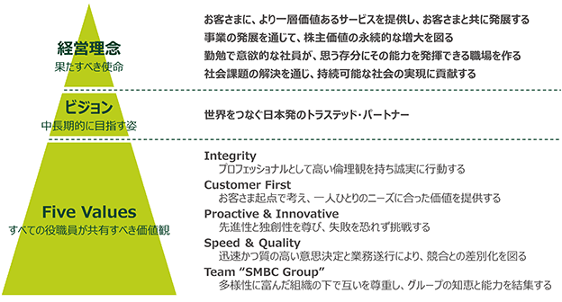
当事業年度を顧みますと、世界経済は、昨年４月に米国政府が公表した関税措置等、通商政策の影響に対する懸念が高まりましたが、夏場にかけて、わが国を含む多くの国々が米国との通商協議で段階的な合意に至ったこと等を背景に、景気の下押し圧力が和らぎ、総じて緩やかに成長しました。特に米国では、関税引上げによる雇用情勢の悪化や政府閉鎖の影響等が重石となりましたが、旺盛なＡＩ需要を受けた関連投資の拡大や、株高を背景とした高所得者層の消費増加により内需が押し上げられ、景気は底堅く推移しました。また、わが国の経済におきましても、米国による関税措置の影響を受け、米国向け輸出は減少しましたが、ＡＩ需要の高まり等を背景に、米国以外の国・地域向け輸出が堅調に推移し、総じて緩やかに回復しました。設備投資につきましても、ＡＩ関連をはじめとする成長分野や既存設備の更新等を中心に増加しました。
一方、足許では、中東情勢の緊迫化を要因とする資源価格の高騰や各国における政治情勢の不安定化等、当社グループを取り巻く経済・金融環境については先行きの不透明感が一層大きくなっております。
また、あらゆる分野においてＡＩの活用が急速に進展し、生成ＡＩ等を組み込んだ業務プロセスの高度化や、ＡＩを前提としたサービス・ビジネスモデルへの転換ニーズが高まるなど、企業活動や個人の意思決定・消費行動は大きく変容しております。金融業界においても、プラットフォーマーやＦｉｎｔｅｃｈ、異業種企業がＡＩを活用した金融サービスの提供や顧客接点の高度化を進めております。同時に、ＡＩの利活用に関する規制・ルール整備も進みつつあり、適切な管理態勢を前提として、新たな付加価値創出や業務変革に挑戦する余地が拡大しております。
更に、世界が直面する社会課題についても、気候変動に加えて、少子高齢化や貧困・格差、人権問題等、課題が多様化・深刻化しており、企業として幅広い社会課題に主体的に取り組むことがより一層求められております。
当社グループは、2028年度までの３年間を計画期間とする中期経営計画を策定しました。基本方針を「高みを目指して大胆な変革にチャレンジ」とし、新たなビジョンの実現に向けて、事業戦略、経営基盤、ＩＴトランスフォーメーション、社会的価値創造の各領域において、各施策を着実に推進してまいります。これにより、欧米の大手金融機関に比肩する収益水準の実現を目指してまいります。
本中期経営計画では、以下を最終年度の2028年度の財務目標として掲げております。
＜連結財務目標（2028年度）＞
当社は、規律ある経費コントロールのもと、経費率を50%台前半で維持するとともに、事業ポートフォリオの変革を通じてＲＯＲＡ※３を0.5%改善させたうえで、ボトムライン利益を２兆円規模へ引き上げることにより、上記目標の達成を目指してまいります。
※１ Return on Tangible Equityの略で、無形固定資産の影響を控除した有形自己資本利益率。分母は純資産から無形固定資産を控除し、分子は当期純利益に対してのれん償却費用を戻入れたもの。
※２ バーゼルⅢ最終化時ベース、その他有価証券評価差額金を除く。
※３ Return on Risk-Weighted Assetsの略で、リスクアセットに対する収益率を表す指標。分母はリスクアセットで、分子は粗利益。
前中期経営計画においては、「Ｏｌｉｖｅ」を中心としたデジタルプラットフォームによる競合他社との差別化や、金融サービスに留まらない幅広い領域での新たなサービスの提供等を強みとして、主要事業が力強く成長し、業績は飛躍的に伸長しました。また、経営基盤の強化に加え、社会的価値創造に関する取組みの進展等、着実に成果を上げることができました。これまでの取組みが結実し、次の成長段階へ進むことができたと考えております。今後は、本邦トップかつグローバルに存在感を発揮できる企業グループを目指してまいります。
今後の経営環境を見通しますと、国際秩序の揺らぎやテクノロジーの急速な進化等の歴史的な構造変化を背景に、事業を取り巻く前提条件は大きく変化していくことが想定されます。足許では、中東情勢をはじめとする地政学リスクの高まりや、各国の政策・規制環境の変化等により、先行きの不確実性は一段と高まっています。このような環境変化がもたらす影響やリスクには留意する必要がある一方、当社グループとしては、こうした状況を、戦略領域において競争優位性を確立し、プレゼンスを一段と高めていく好機でもあると捉えています。また、国内においては経済の再成長に向けた機運が定着しつつあり、その実現に最大限貢献していくことが、当社グループの重要な使命であると考えております。
こうした認識のもと、新たなビジョンとして、「世界をつなぐ日本発のトラステッド・パートナー」を掲げることといたしました。これまで一貫して重視してきたお客さまや社会からの信頼を礎に、国境を越えて企業活動や資金の流れをつなぐグローバルなプラットフォームを構築するとともに、日本においても、確固たる事業基盤の構築と強みを活かした競合他社との差別化に取り組み、ステークホルダーの皆さまにとって最高のパートナーとなることを目指してまいります。
本中期経営計画では、このビジョンの実現に向けて、基本方針を「高みを目指して大胆な変革にチャレンジ」としました。事業戦略につきましては、国内外の旺盛なビジネス機会を捉えて成長を加速させるとともに、資本効率の更なる向上を目指し、戦略領域におけるビジネスモデルの進化と事業ポートフォリオの変革に取り組んでまいります。経営基盤につきましては、グローバルで競争力のある事業展開を支えるため、中長期的にグローバルトップティア水準を目指し、高度化を進めてまいります。前中期経営計画から注力してきた社会的価値創造につきましては、取組みを一層拡充することで、人々の幸せが溢れる社会の実現に貢献してまいります。
また、テクノロジー活用の巧拙が金融機関の競争力を大きく左右する情勢を踏まえ、ＩＴトランスフォーメーションに集中的に取り組んでまいります。ＩＴ投資の拡大と開発力の強化を通じて、生成ＡＩをはじめとした日々進化するテクノロジーを最大限に活用できる組織への変革を進めてまいります。
これらの取組みを通じて、本計画期間以降の中長期的な収益性ターゲットをＲＯＴＥ15％程度とし、欧米の大手金融機関に比肩する水準を目指してまいります。
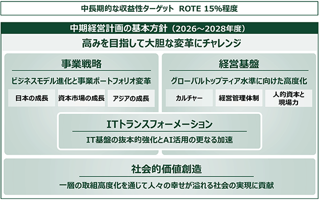
＜事業戦略＞
国内では、デジタルプラットフォームにおける優位性の発揮やグループ一体でのソリューションの提供等を通じて、顧客基盤の拡大と競合他社を上回る成長の実現を目指してまいります。また、Ｓ＆Ｔ事業の強化による資本市場での当社グループのプレゼンス向上や、アジアにおける投資の成果の実現に注力し、海外の法人のお客さま向けの貸出業務において抜本的な資産の入替えも進めることにより、海外事業の収益性向上を図ります。更に、資本効率の高いアセットマネジメントビジネスや決済ビジネスの拡大にも国内外において一体的に取り組みます。これらの重点戦略領域へ優先的に経営資源を配分し、収益成長とＲＯＴＥ向上を両立してまいります。こうした事業ポートフォリオの変革にあたっては、「Ｏｐｔｉｍｉｚｅ（ポートフォリオの最適化）」、「Ｃａｐｉｔａｌｉｚｅ（施策効果の最大化）」及び「Ｂｕｉｌｄ Ｎｅｘｔ Ｃｏｒｅ（次の成長への布石）」の３つの方針に基づいて資源配分の最適化を図り、収益性、成長性及び安定性のバランスが取れた事業ポートフォリオの構築を目指してまいります。
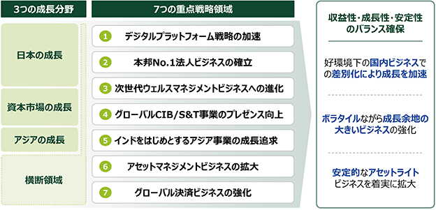
＜経営基盤＞
信頼と挑戦を重視する企業カルチャーを醸成するとともに、グループベースでのグローバル経営体制の高度化や、業務環境の変化及び事業領域の拡大に応じた各種リスクのコントロールの強化を図ります。また、成長戦略の着実な実行を支える人的資本の強化に継続的に取り組むなど、当社グループの強みである現場力の最大化にも注力してまいります。
＜ＩＴトランスフォーメーション＞
過去最大となる３カ年で１兆円規模のＩＴ投資を通じ、クラウド化等のＩＴインフラの抜本的な刷新を進めるとともに、専門人材の増員等によりＩＴ関連の企画・開発体制の強化を進めてまいります。また、ＡＩ活用を一段と加速すべく、従業員への教育機会を拡充するほか、プロダクトやオペレーションを一体的に見直すことで、ＡＩを前提とする業務プロセスを整備してまいります。
＜社会的価値創造＞
目指す社会像や取組みの方向性を明確化すべく、2026年度より「ＳＭＢＣグループ 社会的価値創造宣言」を制定するとともに、「緑の地球」、「輝く人々」及び「幸せな成長」の３つを、当社グループのマテリアリティと定めました。新たなマテリアリティのもと、従業員一人ひとりの主体的な参画を促進するとともに、本業を通じた取組みを一層強化することで、社会的価値創造の高度化を進めてまいります。
当社グループは、これらの取組みにおいて着実な成果をお示しすることにより、株主の皆さまのご期待にお応えしてまいりたいと考えております。株主の皆さまには、今後ともなお一層のご理解、ご支援を賜りますようお願い申し上げます。
当社グループのサステナビリティ関連財務開示については、投資者の投資判断上、重要であると考えられる事項について記載しております。本項においては、将来に関する事項が含まれておりますが、当該事項は有価証券報告書提出日現在において判断したものであります。
(1) 全般的情報
当社グループのサステナビリティ関連財務開示は、当連結会計年度（2025年４月１日から2026年３月31日まで）を報告期間としております。本サステナビリティ関連財務開示は、情報開示委員会で協議し、2026年６月19日に、グループＣＦＯによって承認されております。サステナビリティ関連財務開示に関する主な前提は以下の通りです。
① 判断に関する開示
本サステナビリティ関連財務開示を作成する過程で行った判断のうち、サステナビリティ関連財務開示に含まれる情報に最も重大な影響を与える判断は、合理的に見込み得る重要なサステナビリティ関連のリスク及び機会の識別、並びにそれらに関する重要な情報の識別と認識しております。当社グループにおけるこれらの識別のプロセスは次のとおりです。
イ) ビジネスコンテクストを把握（当社グループにおける主要な事業セグメントとステークホルダーの特定）
ロ) 各種開示基準や開示ガイダンス、金融業界における開示例、社内情報等を踏まえ、サステナビリティ関連のリスク及び機会の類型（サステナビリティトピック）を識別
ハ) 金融業界における開示例、社内情報、投資者からの意見等を踏まえて評価を行い、企業の見通しに影響を与えると合理的に見込み得る重要なサステナビリティトピックを決定
ニ) 各サステナビリティトピックに関し、発生確率や影響度の観点を踏まえて評価を行い、重要なリスク及び機会を識別
ホ) 重要なリスク及び機会について、各種開示基準や開示ガイダンスを踏まえ、重要性がある情報を識別し、開示項目を決定
② リスク及び機会の識別におけるガイダンスの情報源に関する情報
当社グループは幅広い事業を展開する複合金融グループであり、銀行業務を中心に、リース業務、証券業務、コンシューマーファイナンス業務等の金融サービスに係る事業を行っております。
当社グループは、重要なサステナビリティ関連のリスク及び機会並びに情報を識別するにあたり、商業銀行、投資銀行、不動産金融、コンシューマーファイナンスに関するＳＡＳＢスタンダード（2025年12月最終改訂）を参照しました。その結果、当社グループの見通しに影響を与えると合理的に見込み得るサステナビリティ関連のリスク及び機会として、「①判断に関する開示」に記載しているプロセスに従い、気候、人的資本、コンプライアンス、サイバーセキュリティに関連するリスク及び機会、並びに重要性がある情報を識別しております。各リスク及び機会の内容については、「(3) 戦略」を参照ください。
③ 後発事象
本サステナビリティ関連財務開示に関して、重要な後発事象について記載すべきものはありません。
(2) ガバナンス
「ＳＭＦＧコーポレートガバナンス・ガイドライン」に沿って運用されている当社グループのガバナンス体制の詳細は
① 監督体制
当社グループでは、取締役会が重要なサステナビリティ関連のリスク及び機会（気候・人的資本・コンプライアンス・サイバーセキュリティ）の監督に責任を負っております。取締役会は、重要なサステナビリティ関連のリスク及び機会への適時適切な対応（当該リスク及び機会に関連するトレードオフについての考慮を含む）の観点を踏まえて、経営の基本方針等を審議・決定し、執行役及び取締役の職務執行を監督しております。取締役会は原則月１回開催されるほか、必要に応じて随時開催されており、各内部委員会の職務執行の状況やグループＣｘＯをはじめとする執行役等の業務執行の状況等について、適時に報告を受けて審議しております。
また、指名委員会、報酬委員会及び監査委員会は、重要なサステナビリティ関連のリスク及び機会に対する適切な監督の観点を踏まえ、法令及び規程の定める所掌事項に関して審議・決定等を行っております。具体的には、指名委員会は、重要なサステナビリティ関連のリスク及び機会に対する適切な監督の観点も踏まえ、株主総会に提出する当社取締役の選任および解任に関する議案の内容の決定や、グループＣｘＯの選任及び取締役会内部委員会の委員の選定等について審議しております。なお、取締役候補者に対して当社が特に期待する知見・経験に記載の項目には、「サステナビリティ」「法務・リスク管理」「ＩＴ／ＤＸ」を含めております。
報酬委員会は、重要なサステナビリティ関連のリスク及び機会に対する適切な監督の観点も踏まえ、取締役・執行役および執行役員の報酬等の決定方針や、同方針に基づく取締役及び執行役の個人別の報酬等を決定しております。当連結会計年度においては、取締役、執行役及び執行役員を対象とする業績連動報酬等の算定にあたり、気候関連及び人的資本関連の指標を用いており、気候関連については、環境（ＦＥ削減・サステナビリティファイナンス実行額）に関するＫＰＩ、人的資本関連については従業員エンゲージメント等に関するＫＰＩの達成状況をそれぞれ考慮しました。これらの指標は、他の評価項目と一体として評価に組み込んでおり、独立した区分としては識別しておりません。
当連結会計年度に係る役員等の報酬における評価指標の実績については、
監査委員会は、重要なサステナビリティ関連のリスク及び機会に対する適切な監督の観点も踏まえ、取締役・執行役によるリスク管理を含めた職務執行等の監査を行っております。
さらに、任意で設置しているリスク委員会及びサステナビリティ委員会は、規程の定める事項に関して審議の上、取締役会に報告・助言しております。具体的には、リスク委員会は、重要なサステナビリティ関連のリスクの観点も踏まえ、環境・リスク認識とリスクアペタイトの運営、リスク管理に係る運営体制等について審議し、取締役会に報告・助言しております。
サステナビリティ委員会は、気候変動対策をはじめとした社会的価値の創造の進捗に関する事項、サステナビリティを取り巻く国内外の情勢に関する事項、その他社会的価値創造に関する重要な事項等について審議し、取締役会へ定期的に報告・助言しております。
なお、取締役会及び各内部委員会の開催状況及び活動状況等については、
② 執行体制
（イ）経営者の役割を委任している機関等、監督方法
〇 各トピック共通
グループ経営会議は取締役会の下、重要なサステナビリティ関連のリスク及び機会の観点も踏まえ、グループ全体の業務執行・経営管理に関する最高意思決定機関として機能しております。
〇 気候関連
グループＣＳＯは経営戦略に関する事項を所管、グループＣＲＯはリスク管理に関する事項を所管、グループＣＳｕＯは気候関連の取組を含む社会的価値創造に関する事項を所管しております。
また、リスク管理委員会において、気候関連のリスクに関する観点も踏まえ、当社の環境・リスク認識およびリスクアペタイト・フレームワークについて協議しております。
〇 人的資本関連
グループＣＨＲＯは人事に関する事項を所管しており、取締役会の監督のもと全社的な人材戦略の企画・実行を推進しております。
また、グループＣＥＯを委員長、グループＣＨＲＯを副委員長とするダイバーシティ経営推進委員会において、当社グループ全体のダイバーシティ経営関連の施策等について議論し、ダイバーシティ経営の実現を推進しております。
〇 コンプライアンス関連
グループＣＣＯはコンプライアンスに関する事項を所管しております。
当社グループでは、グループＣＣＯを委員長とするコンプライアンス委員会において、当社グループ内の各種業務に関し広く検討・審議、コンプライアンス強化のための具体的な実践計画を策定し、各社ごとの体制整備を推進しております。
〇 サイバーセキュリティ関連
グループＣＩＯはシステム戦略、システムリスク管理（サイバーセキュリティ含む）に関する事項を所管、グループＣＲＯはリスク管理に関する事項を所管しております。また、グループＣＩＯ・ＣＲＯの下に、グループＣＩＳＯを設置しております。グループＣＩＳＯは、サイバーセキュリティ統括責任者として専門的な見地から、グループおよびグローバルでの体制整備や各所の施策推進における監督・指導を担っております。
加えて、リスク管理委員会において、サイバーセキュリティのリスクに関する観点も踏まえ、当社の環境・リスク認識およびリスクアペタイト・フレームワークについて協議しております。
(3) 戦略
当社グループは、サステナビリティ関連のリスク及び機会の影響が生じると合理的に見込み得る時間軸について、「短期」を１年未満、「中期」を１年以上３年以下、「長期」を３年超と定義しており、これらの時間軸は、当社グループの戦略的意思決定において重要な役割を果たしております。短期の１年未満の期間は、当社グループの業務計画の期間と整合しており、１年間の日々の業務運営や目標達成に向けた具体的な施策を策定するために使用されます。中期の１年以上３年以下の期間は、当社グループの中期経営計画の期間と整合しており、持続的な成長と競争力の強化を目指すための戦略的な施策を策定するために用いられます。この期間は、変化する市場環境に対応し、柔軟な戦略の見直しを可能にします。長期の３年超の期間は、次期中期経営計画以降の期間であり、当社グループのビジョンの実現に向け、長期的な目標を達成するための指針として機能します。
当社グループが重要と認識するサステナビリティ関連のリスク・機会の概要は以下の通りです。各リスク・機会の詳細については、以降に記載するトピック別の戦略パートを参照ください。
＜当社グループにおけるサステナビリティ関連リスク・機会の概要＞
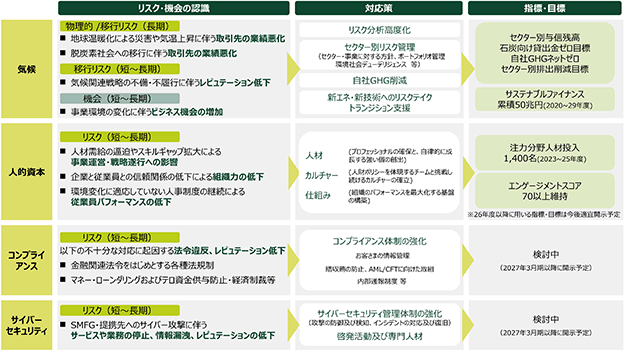
① 気候関連
（イ）重要なリスク及び機会
〇 与信先の業績悪化（急性・慢性物理的リスク、移行リスクに伴う信用リスク）
地球温暖化が進むことで、台風や洪水といった急性の自然災害や、平均気温上昇に伴う降水量増加等の慢性的な気候変化が増える可能性があります。また、脱炭素社会への移行は、炭素排出目標の厳格化や炭素税の引き上げをはじめとする各国の規制強化を伴う可能性があるほか、新たな技術・エネルギー源の導入や消費者嗜好の変化により産業構造や市場に大きな影響を与える可能性があります。これにより、当社グループは長期において、お客さまの業績悪化や、担保棄損により、当社グループの与信関係費用が増加するリスクを認識しております。当該リスクは、与信業務を対象としているため、銀行業において認識しております。
当社グループは、セクター別に気候変動に伴うリスクの影響度合いを示すヒートマップを整理しております。物理的リスク（急性・慢性）については資源依存度の高い飲料、農業、包装食品・肉、紙・林産物等のセクター、移行リスクについては特に電力、石油ガス、石炭等の高排出とされるセクターについて、一定のリスクがあると認識しております。これらの分析手法は発展段階にあり、気候変動に関連する政策や技術、市場等の環境変化や、最新の気候科学の発展に合わせて継続的に見直し、戦略の高度化にも繋げて参ります。
また、ヒートマップにおける評価対象セクターごとに株式会社三井住友銀行及びその主要銀行子会社等における与信残高の状況を把握しております。気候関連リスクの低減に向けた取組を行うにあたり、他のセクター別分析結果と組み合わせ、注力分野を見極めたうえで戦略に反映するために活用しております。
ヒートマップに関する評価方法については「(4)リスク管理」、セクター別与信残高の集計方法については「(5)指標及び目標」を参照ください。
＜ヒートマップとセクター別与信残高＞
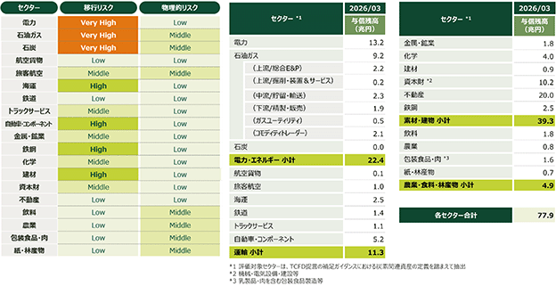
〇 気候変動に関するレピュテーショナルリスク
脱炭素社会への移行に伴い、各企業は脱炭素社会に適合したビジネスモデルへの変革や温室効果ガス排出抑制等の取組が各ステークホルダーから求められております。中でも金融業界においては、金融機関自身だけでなく特に高排出とされるセクターへの与信を通じた間接的な環境・社会への影響についても考慮することが求められております。
また、これらの取組状況に対するステークホルダーからの開示要請も高まっており、気候変動問題への取組が企業評価基準の一つになりつつあります。これらの取組不足や情報開示要請への対応の遅れは短期から長期において、お客さまや株主をはじめとするステークホルダーからの高い期待に応えられず、当社グループのレピュテーション低下に繋がるリスクが想定されます。その結果、当社グループの株価、業務、経営成績及び財政状態に影響を及ぼす可能性があります。これらのリスクは特定の地域やセクターに限ったものではなく、当社グループ全体に影響を及ぼすリスクとして認識しております。
当社グループの温室効果ガス排出量については、スコープ３温室効果ガス排出のカテゴリー15（ＦＥ：ファイナンスド・エミッション）が大宗を占めており、温暖化抑制に向けては当社グループ自身だけでなく、お客さまの脱炭素化を支援していくことが重要となります。ファイナンスド・エミッションの削減に向けては、前述のセクター別リスク分析結果や残高に加え、排出量やセクター別算定基準の状況等を考慮しながら、中長期的な目標を設定するセクターを選別しております。中長期的な目標の設定に際しては、各特性を踏まえたセクター別の指標並びに算定手法を定めた上で、別途セクター別排出量の算定を行っております。ファイナンスド・エミッションを含む当社グループの温室効果ガス排出量、並びにセクター別排出削減目標の詳細については、「(5)指標及び目標」を参照ください。
〇 気候関連のビジネス機会
ネット・ゼロの実現に向けては、大幅な温室効果ガス排出量削減のためのビジネスモデルの転換、そのための技術革新や大規模な設備投資が必須となります。ＩＥＡ（International Energy Agency）はＮＺＥ（Net Zero Emissions）シナリオにおいて、エネルギー分野への年間投資総額は今後増加し、今後10年間の平均で年間4.8兆ドルに達するとともに、2035年には年間5.6兆ドルまで拡大すると試算しております。
当社グループは、気候変動問題への対応は世界的に喫緊の課題であり、多くの企業が経営課題に据え注力していると認識し、脱炭素社会の実現に向けてビジネスモデルの転換を目指す中で、事業再編や企業の合併・買収等が活発化し、ビジネス機会が増加すると認識しております。
従って、当社グループは短期～長期において、資金需要の拡大に伴う融資や債券引受等の増加、アドバイザリー業務に対するニーズ拡大といった機会を認識しております。当該機会は銀行業を営む株式会社三井住友銀行及びその主要子会社、証券業を営むＳＭＢＣ日興証券株式会社において認識しております。
（ロ）当社グループの戦略
当社グループでは、気候関連のリスク・機会にかかる戦略並びに今後の目標・アクションプランを体系化した移行計画（ロードマップ）をサステナビリティ委員会等での協議を踏まえ、グループ経営会議ならびに取締役会を通じて定めております。当該移行計画は、気候変動に関する各種シナリオ（ＩＰＣＣ、ＮＧＦＳ、ＩＥＡ等）、並びにそれらに基づくリスク分析の結果等を総合的に考慮の上、作成しております。移行計画の進捗は定期的にグループ経営会議ならびに取締役会に報告しており、監督されております。
なお、移行計画の実現（セクター別排出削減目標の達成やトランジションファイナンス推進等）に際しては、主要国における脱炭素技術開発の進展や当該技術に関する法令・市場の整備等が進み、各企業がトランジションに取り組める状況になっていること、それらに対するファイナンスが可能になっていることが不可欠となります。これら状況を注視の上、必要な場合には移行計画について適宜見直しを行って参ります。
また、当社グループでは、気候関連の戦略並びに移行計画を検討するにあたり、気候関連のリスク及び機会の間のトレードオフも考慮して対応策を決定しております。具体的には、高排出セクターのお客さまに関する事業機会が多いと想定される一方で、当該セクターは移行リスクも高いというトレードオフがあります。但し、移行に資するお客さまの取組を支援することが当社グループの気候関連リスクの軽減にも資すると考えております。高排出セクターのお客さまについては、移行に向けたエンゲージメント並びに支援を行うことで、長期的に移行リスクの低減を実現して参ります。
当該移行計画の詳細は以下の通りです。
＜当社グループの移行計画（ロードマップ）＞
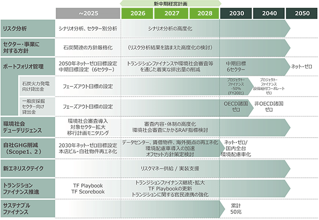
〇 リスク分析の高度化
当社グループは、気候変動に伴う取引先の業績悪化リスクに対応するために、これまでシナリオ分析を実施し、分析対象とするリスク事象の拡大を図ってきました。シナリオ分析には、シナリオや計測手法に一定の不確実性が伴うことから、今後、分析手法の高度化に取り組み、リスクの顕在化が見込まれる場合は、お客さまに対応を促しつつ自らのリスク低減に努めて参ります。現時点におけるシナリオ分析の詳細については、「（ニ）気候レジリエンス」を参照ください。
またシナリオ分析に加え、ヒートマップをはじめとするセクター別の物理的リスク並びに移行リスクの分析を実施しております。セクター別リスクは、各国法令や業界動向、実体経済への温暖化影響の顕在化などの状況により変化するため、引き続き定期的な分析並びに高度化に取り組み、後述のセクター・事業に対する方針や環境社会デューデリジェンスなどの各種施策へ反映して参ります。
〇 セクター・事業に対する方針
当社グループは信用リスク並びにレピュテーショナルリスク管理の観点から、取引を通じて環境・社会に対する負の影響を与える可能性が高いセクター・事業に対する取組方針を定めております。一般炭採掘並びに石炭火力発電については、特に大きな影響が懸念されることから、厳格な方針を定めて運用しております。
今後も各セクター・事業に対するリスク認識の変化を踏まえ、方針の高度化を検討して参ります。
〇 ポートフォリオ管理
信用リスク（移行）並びにレピュテーショナルリスク管理の観点から、当社グループは石油ガス・石炭・電力・鉄鋼・自動車・不動産セクターを対象としたセクター別排出量の中期目標を設定しております。当該目標の詳細については、「(5)指標及び目標」を参照ください。こうした中期目標の設定に加え、気候関連リスクのリスクアペタイトを定めた上で、セクター別排出量をリスクアペタイト指標として設定し、当該排出量を管理しております。
加えて、一般炭採掘並びに石炭火力発電については特に大きな影響が懸念されることから、フェーズアウト目標を定めて運用しております。当該目標の詳細については、「(5)指標及び目標」を参照ください。
今後はセクター別排出削減目標に限らず、ポートフォリオ管理に向けた適切な指標や施策についても検討を進め、気候関連リスクの適切な管理を強化して参ります。
〇 環境社会デューデリジェンス
株式会社三井住友銀行では、コーポレート、プロジェクトの双方において、信用リスク並びにレピュテーショナルリスク管理の観点から与信先のリスクを評価し、与信における判断要素として活用するとともに、評価結果を踏まえたお客さまエンゲージメントを実施しております。今後も各セクター・事業に対するリスク認識の変化を踏まえ、審査内容・体制の高度化や対象拡大などを検討して参ります。
＜環境社会デューデリジェンスの概要＞
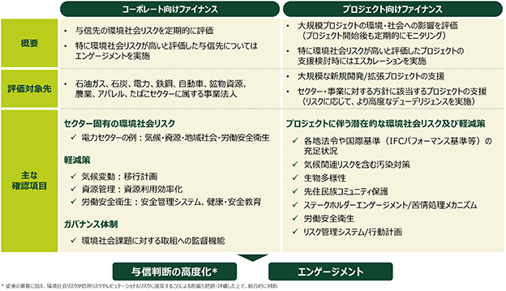
なお、セクター・事業に対する方針、ポートフォリオ管理、環境社会デューデリジェンスを踏まえたセクター別のリスク管理状況は以下の通りです。
＜セクター別のリスク管理状況＞
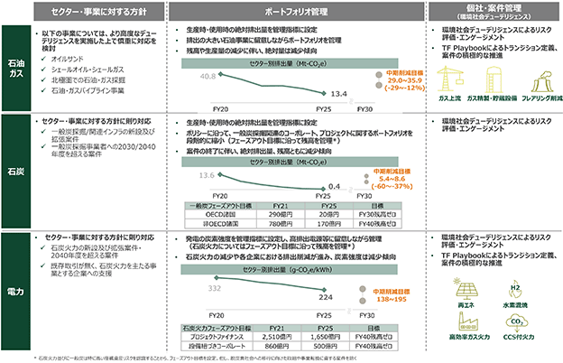
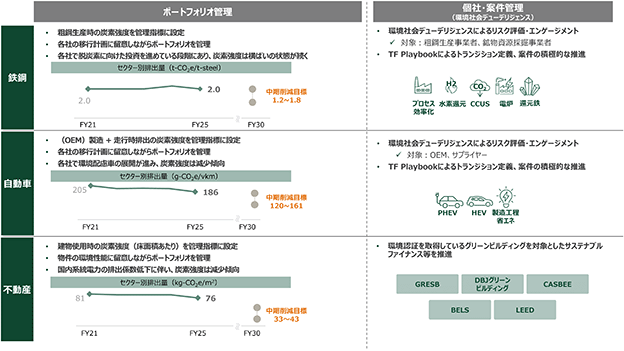
〇 自社ＧＨＧ削減(スコープ１温室効果ガス排出及びスコープ２温室効果ガス排出削減)
当社グループは2030年度ネット・ゼロを目標として掲げ、グループ・グローバルでの自社における排出量の管理・削減を進めております。当該目標の詳細については、「(5)指標及び目標」を参照ください。
スコープ１温室効果ガス排出に関しては、社用車において順次ＨＶ・ＥＶをはじめとした環境配慮車の導入および充電器の設置を進めております。国内の営業車については2030年度までに全台を環境配慮車へ切り替えていく予定です。
スコープ２温室効果ガス排出に関しては、国内の自己所有物件を中心に再生可能エネルギー導入を推進しております。2023年度には、当社グループの国内自己所有物件・主要な連結子会社における本社ビルの再生可能エネルギー由来電力への切り替えが完了しました。今後は、データセンター、賃借物件、海外拠点を中心に再生可能エネルギー由来電力への切り替えを進めて参ります。
なお、2030年度ネット・ゼロ目標の達成に向けては可能な限り排出量を削減しつつ、削減し切れない分の排出量についてはカーボン・クレジットを利用することを予定しておりますが、具体的にどのようなカーボン・クレジットを用いるかについては検討中です。
今後はＳＢＴｉ（Science Based Targets initiative）/ ＶＣＭＩ（The Voluntary Carbon Markets Integrity Initiative）/ＩＣＶＣＭ（The Integrity Council for the Voluntary Carbon Market）といった国際的なイニシアティブの動向を踏まえながら、カーボン・クレジットの活用方針を2026年度から2028年度までの中期経営計画の期間において整備する予定です。
〇 新エネルギー・新技術へのリスクテイク
脱炭素化に向けて不可欠な新エネルギー・新技術の社会実装に向けてはさまざまな課題があり、スケール化のフェーズで資金の需給ギャップに陥ることが多くあります。当社グループは、資金が不足しやすいフェーズにおいてリスクマネーを積極的に供給することで、新エネルギー・新技術の社会実装加速に貢献してまいります。
案件の拡大に向け、今後は営業担当者の新エネルギー・新技術に関する知見のケイパビリティビルディングを進めるとともに、Jefferies Financial Group Inc.との協働等を進めて参ります。
〇 トランジション支援
カーボンニュートラル実現に至る道筋は一通りではなく、各国固有の事情にも十分配慮しつつ、2050年までの現実的なルートとスピードを、お客さまとともに丁寧に見定めていく必要があります。当社グループは、トランジションファイナンスを「顧客が自社の事業や運営を、パリ協定の目標に沿った道筋に合わせることを支援するために提供される金融サービス」と定義しております。本定義に沿って、当社グループの期待事項、判断方法の詳細を示したTransition Finance Playbookを策定し、同Playbookを活用してお客さまとの対話を重ね、国内外の脱炭素化に資する案件を積極的に支援しております。
現在、トランジションファイナンスを含むサステナブルファイナンス実行額を2020年度から2029年度までの累計で50兆円とする目標を設定しております。近年では年10兆円弱のペースで実績が積み上がっており、当該目標に対して当連結会計年度で既に90%程度の達成率となっております。
当該目標の詳細については、「(5)指標及び目標」を参照ください。
＜サステナブルファイナンス取組額＞
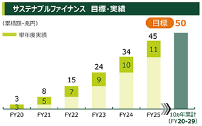
また、トランジションの実現に向けては、各国におけるロードマップ整備やそれに伴う政策支援（コスト負担）など、民間企業だけでは解決できない課題も多く存在しております。当社グループでは、エンゲージメントを通じて得た知見を基にかかる課題や提言をまとめたTransition Finance Scorebookを策定し、政府並びに業界団体との対話を行っております。高排出セクターの事業者が移行を実現しやすい/トランジションファイナンスを実施しやすい環境の実現に向け、引き続き対話を続けて参ります。
（ハ）リスク及び機会の財務的影響
〇 与信先の業績悪化（急性・慢性物理的リスク、移行リスクに伴う信用リスク）
物理的リスクや移行リスクに伴うお客さまの業績悪化により、当社グループの与信関係費用が増加する可能性があります。与信関係費用の算定にあたっては、予め定めている貸倒金償却・貸倒引当金の計上基準に則り必要と認められる金額を計上しており、急性・慢性物理的リスクや移行リスクによるお客さまの業績悪化があった場合、その影響も勘案されることとなりますが、当連結会計年度において急性・慢性物理的リスクや移行リスクは当社グループの財務諸表に重要な影響を与えていないと認識しております。
また、将来の財務的影響について、株式会社三井住友銀行及びその主要銀行子会社では一般事業法人を対象とした定量的なシナリオ分析結果を利用しており、長期では与信関係費用に重要な影響を及ぼす可能性があると考えております。シナリオ分析結果は「（ニ）気候レジリエンス」に記載しております。
なお、当社グループでは、急性・慢性物理的リスクや移行リスクについて、測定の不確実性が高いと考えられるため、将来の財務的影響の見積りに関する定量的情報は開示しておりません。また、急性・慢性物理的リスクや移行リスクと、他のリスクやその他の要因との将来の複合的な財務的影響に関しても、合理的に見積もることが困難であり、定量的情報が有用でないと判断しているため開示しておりません。
〇 気候変動に関するレピュテーショナルリスク（移行リスク）
気候変動問題への取組不足や情報開示要請への対応の遅れによって、当社グループのレピュテーションが低下し、当社グループの株価、業務、経営成績及び財政状態に影響を及ぼすリスクがあります。当社グループでは、当連結会計年度においては、そのような事象は見受けられませんでした。したがって、当連結会計年度において、気候変動に関するレピュテーショナルリスクは当社グループの財務諸表に重要な影響を与えていないと認識しております。
当社グループは、前述の移行計画の実行に加え、法令その他諸規則等を遵守し適切なサステナビリティ情報開示を行う体制の高度化を進めております。しかしながら、移行計画を遵守できなかった場合や情報開示が不十分である場合、短期から長期において重要な損失を計上する可能性があります。ただし、発生の蓋然性・時点・損失額等は将来の規制をはじめとした社会変化やステークホルダーからの期待の変化に依存する可能性が高く、当該リスクの発生有無、および発生した場合の財務的影響には不確実性が伴うと考えております。したがって、当期末時点では定量的な将来の影響額を開示しておりません。
〇 気候関連のビジネス機会
お客さまの脱炭素化に向けた設備投資、技術革新、事業再編等に伴う資金需要の拡大を背景に、当社グループではお客さまの社会課題解決に向けた取組を支援すべく、サステナブルファイナンスを積極的に推進しており、2029年度末までのサステナブルファイナンス実行額50兆円という目標に向けて実績を積み上げております。
その結果、当連結会計年度において、サステナブルファイナンスの実行額は10.8兆円（20年度からの累積額は45.4兆円）となっております。関連する収益は主に資金運用収益並びに役務取引等収益に含まれております。
短期から長期において、脱炭素化に向けた事業環境の変化に伴うビジネス機会の増加に伴い、これら収益の増加が見込まれます。なお、サステナブルファイナンスに関する収益については、通常のファイナンスと区分して集計することが困難であるため、定量的情報を記載しておりません。また、将来の財務的影響に関しては、市場環境の影響を受けるため定量的情報が有用でないと判断しているため、開示しておりません。
（ニ）気候レジリエンス
当社グループでは識別した気候関連リスク（与信先の業績悪化）に関して、当連結会計年度の末日における当社グループの戦略及びビジネスモデルの気候レジリエンスを評価するにあたり、シナリオ分析を実施しております。具体的には、物理的リスク・移行リスクに伴う2050年までの株式会社三井住友銀行及びその主要銀行子会社等への財務的影響を試算しております。
〇 シナリオ分析の仮定並びに結果
当社グループでは、現時点で想定されるリスク経路とリスク量を可視化することにより、気候関連リスク管理に向けた戦略を策定するための基盤を構築することを目的とし、シナリオ分析を実施しております。なお、本節に記載している分析結果は今後の更新を予定しております。
急性物理的リスクの分析にあたっては、一般事業法人を対象に、水災の業績への波及について担保価値の毀損、財務状況の悪化に伴う債務者区分の劣化という２つの経路を検討しました。国内においては担保物件、事業法人ごとに国土交通省が開示しているハザードマップを用い想定浸水深を把握し、海外においては事業法人ごとにJupiter Intelligence社による衛星画像を用いたＡＩ分析により想定浸水深を算出したうえで、これらを基に担保毀損影響、財務悪化影響を分析しました。あわせて、ＭＳ＆ＡＤインターリスク総研が、東京大学、芝浦工業大学と協働で実施している気候変動による洪水リスクの評価プロジェクトの提供データを活用し、ＩＰＣＣが研究の基盤としているRCP2.6シナリオ・SSP1-2.6シナリオ（2℃シナリオ）、およびRCP8.5シナリオ・SSP5-8.5シナリオ（4℃シナリオ）それぞれにおいて、2050年までの洪水発生確率を算出しました。想定浸水深に基づく影響と気候変動シナリオ毎の洪水発生確率を勘案することで、与信関係費用を試算したところ、2050年までに累積670～850億円となりました。
慢性物理的リスクの分析にあたっては、気候関連リスク等に係る金融当局ネットワーク（ＮＧＦＳ）のCurrent Policiesシナリオ（3℃シナリオ）における、気温上昇による生産性低下をはじめとした慢性的に生じるマクロ経済への影響を確認のうえ信用リスク影響を推定するストレステストモデルに反映させ、2050年までに想定される与信関係費用を試算したところ、2050年までに単年度で最大300億円となりました。
移行リスクについては、政策の変更や需給バランスの変化といったリスクファクターによる影響について、エネルギー、電力、鉄鋼、自動車、自動車部品セクターを対象に、各セクターで想定されるリスクファクターが業績に与える影響をＮＧＦＳのCurrent Policiesシナリオ、Net Zero 2050シナリオ（1.5℃シナリオ）、ＩＥＡのＮＺＥシナリオ（1.5℃シナリオ）それぞれについて分析し、信用リスク影響を推定するストレステストモデルに反映させ2050年までに想定される与信関係費用を試算したところ、単年度で30～290億円となりました。
なお、シナリオ分析においては、リスクが顕在化するタイミングや規模について不確実性が高いことから、現時点では想定する災害や分析対象等に一定の前提を置いており、今後も分析手法の精緻化に努めて参ります。
＜シナリオ分析の概要※＞
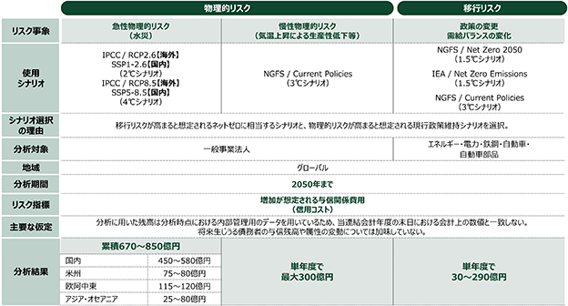
（※）中期経営計画策定の頻度に合わせ、定期的な更新を予定しております
〇 レジリエンス評価
気候変動への対応に関して、当連結会計年度の末日における当社グループの戦略及びビジネスモデルは高いレジリエンスを維持し、事業の継続性を確保していると評価しております。
信用リスク（急性・慢性物理的リスク並びに移行リスク）に関して前述の通りシナリオ分析を実施しており、長期的には一定の影響が生じ得ると想定しております。ただし、短～中期においては重要な財務的影響が生じる可能性は高くないと想定しており、長期的な影響緩和に向け既に移行計画を策定し、実行する体制を整えております。
具体的には、セクター・事業に対する方針やポートフォリオ管理、環境社会デューデリジェンス等を通じてこれらのリスク管理を進めております。これら施策は気候変動に対する戦略的な取組の強化となるため、レピュテーショナルリスクの低減にもつながります。また、プラス面での財務的影響としてビジネス機会の増加が見込まれており、機会獲得の側面からも移行計画を推進しております。
リスクが顕在化するタイミングや規模については不確実性が存在しますが、当社グループでは移行計画の中で継続的にリスク分析を高度化する方針を掲げております。また移行計画の進捗や当該リスク分析の結果を踏まえた修正については、グループ経営会議・取締役会へ定期的に報告・審議されており、状況に応じて当社グループの戦略やビジネスモデル等を修正するケイパビリティを有しております。
② 人的資本関連
（イ）重要なリスク
昨今、事業環境の変化、人材獲得競争の激化、従業員の価値観・働き方の多様化に加え、ＡＩをはじめとするデジタル技術の普及等により、従業員および求職者を取り巻く環境は大きく変化しております。
こうした状況を踏まえ、当社グループは、人的資本に関するリスクとして、「人材需給の逼迫や環境変化に対するスキルの陳腐化等により、経営戦略の遂行が遅延または制約されるリスク」、「企業と従業員との信頼関係の低下により、従業員エンゲージメントが低下するリスク」、「環境変化に十分適応していない人事制度が存続することにより、従業員のパフォーマンスが低下するリスク」を認識しております。
これらのリスクについては、当社グループの人事部が各施策に紐づくＫＰＩ等の指標に基づき、目標値に対する進捗状況や短期間での急激な変化を継続的にモニタリングしております。その結果を踏まえ、必要に応じて制度改定や各種施策の見直し等を実施しております。
なお、これらのリスクは短期から中長期にわたり当社グループの経営に影響を及ぼす可能性があり、特定の事業分野や地域に限定されるものではないため、当社グループ全体に影響を及ぼすリスクとして認識しております。
〇 人材需給の逼迫やスキルギャップ拡大による影響
当社グループでは、人材需給の逼迫や事業環境の変化に十分に対応できないことに伴うスキルギャップ拡大により、事業運営および戦略遂行に影響が生じるリスクを認識しております。当該リスクが顕在化した場合、必要な人材の確保や専門性の充足が困難となり、経営戦略の実行が遅延または制約されるとともに、当社グループ全体の生産性および競争力の低下につながる可能性があります。
〇 企業と従業員との信頼関係の低下による影響
当社グループでは、企業と従業員との信頼関係の低下により、組織運営に悪影響が生じるリスクを認識しております。評価・処遇や成長機会に対する従業員の納得感が低下し、企業と従業員との信頼関係が毀損された場合には、優秀な人材の離職の増加や従業員エンゲージメントの低下が生じる可能性があります。
〇 人事制度の不適合による影響
当社グループでは、事業環境の変化や従業員の価値観・働き方の多様化に十分対応していない人事制度が継続した場合、従業員のパフォーマンスおよび組織全体の競争力が低下するリスクを認識しております。人事制度が事業環境や働き方・価値観の変化に適合していない場合、生産性の低下や意思決定の遅延等が生じる可能性があります。
（ロ）当社グループの戦略
当社グループは、上記の人的資本に関するリスクに対応するため、人材戦略を経営戦略の重要な要素と位置付け、各種施策を推進しております。
〇 中期経営計画における人材戦略
人材戦略は中長期的視点を必要とする取組であり、当社グループは、足元の環境変化および想定されるリスクを踏まえ、主な課題を「人材」「カルチャー」「仕組み」の３つに整理しております。
当社グループは、2026年度から2028年度までの中期経営計画において、人材戦略の高度化に向け、事業戦略と「人材」「カルチャー」「仕組み」の観点を加味し、「プロフェッショナルの確保と、自律的に成長する強い個の創出」「人財ポリシーを体現するチームと挑戦し続けるカルチャーの確立」「組織のパフォーマンスを最大化する基盤の構築」の３つを重点人事戦略と位置付けております。
また従業員が創出する価値の持続的向上および人事戦略の有効性を確認するため、2026年度から2028年度までの中期経営計画におけるＫＧＩとして、人的資本ＲＯＩおよび人財ポリシースコアを設定しております。
a) 人材：プロフェッショナルの確保と、自律的に成長する強い個の創出
当社グループでは、事業戦略の推進に必要なすべての領域において、質・量の両面から十分なプロフェッショナル人材を確保し、適切に配置することを目指しております。この実現に向け、「人材の質および量の把握を通じた戦略的な人材の獲得と最適配置」ならびに、「自律的な成長支援と将来のリーダー育成」に取り組んでおります。
主な取組として、事業戦略に基づく人材充足状況の継続的なモニタリングに加え、戦略と連動した採用方針の策定および採用基盤の整備、ならびに経営人材候補から役員層に至るまでの体系的な育成プログラムの構築・実施等を行って参ります。
また、従業員一人ひとりが主体的に学びを選択し、必要なスキルを継続的に向上させることができる環境を整備するため、各人の役割や成長段階に応じた育成支援を実施するとともに、役割期待の変化を踏まえた自律的なキャリア形成を支援しております。
b) カルチャー：人財ポリシーを体現するチームと挑戦し続けるカルチャーの確立
経営やビジネスの変化、従業員の価値観の多様化など、当社グループを取り巻く環境が目まぐるしく変化している中でも、「人」の大切さに変わりはありません。当社グループでは2023年度に「ＳＭＢＣグループ人財ポリシー」を定め、従業員に「プロフェッショナル」「チームワーク」「挑戦」を求める一方、従業員の活躍を後押しするため「自分らしさの表現」「お客さま・社会への貢献」「キャリア形成と自身の成長」を提供することを明文化しました。
経営戦略の実現に向けては人財ポリシーの好循環の創出が不可欠であると考えているため、従業員一人ひとりに人財ポリシーが浸透し、常時体現できるカルチャーが醸成されている状態を目指します。「人財ポリシーを体現できるカルチャーの浸透」に向けては、インナーコミュニケーションの強化や外部登壇・取材対応等の社外への発信を強化して参ります。
また、多様性を組織の力に変え、新たな価値創造・企業価値の向上につなげることを目指し、ダイバーシティ経営を成長戦略そのものと位置付け、「変化に強い、挑戦し続けるチーム作り」に取り組んでおります。
主な取組として、意思決定層の多様化や、多様な人材が活躍できる組織の実現に向けた風土醸成やキャリア形成支援等が挙げられます。加えて、一人ひとりが健康で活き活きと働くことができる環境の整備に取り組んでおります。
c) 仕組み：組織のパフォーマンスを最大化する基盤の構築
高い再現性と生産性を兼ね備えた組織および経営基盤が構築された状態を目指し、「生産性を向上する仕組みと競争力ある制度構築」ならびに「機動的で信頼される安定した人事運営体制の整備」に取り組んでおります。
主な取組として、グループ全体で整合性の取れた人事制度の構築やグループ人事体制の強化に加え、本社・地域間のアラインメント強化を通じたグローバル人事体制の高度化、人事業務におけるＡＩ・テクノロジーの活用による業務変革などが挙げられます。
なお、人的資本に関する財務的影響およびレジリエンスに関する開示については現在検討を進めており、2027年３月期以降の
③ コンプライアンス関連
（イ）重要なリスク
〇 金融関連法令をはじめとする各種法規制への不十分な対応に起因する法令違反、レピュテーション低下
当社グループは業務を行うにあたり、会社法、銀行法、独占禁止法、金融商品取引法、貸金業法及び金融商品取引所が定める関係規則等の各種法規制の適用を受けております。また、海外においては、それぞれの国や地域の規制・法制度の適用、及び金融当局の監督を受けております。
したがって、当社グループは短期から長期において、金融関連法令をはじめとする各種法規制への不十分な対応に起因する法令違反及びレピュテーション低下のリスクを認識しております。これら各種法規制への対応が不十分な場合、お客さまや投資者の信頼を損ない、取引の減少によって収益が減少するほか、規制当局から制裁金や罰金の支払が科される可能性があります。当該リスクは当社グループ全体に影響を及ぼすリスクとして認識しております。
〇 マネー・ローンダリングおよびテロ資金供与防止（以下、ＡＭＬ／ＣＦＴ（Anti-Money Laundering / Countering the Financing of Terrorism））、経済制裁等への不十分な対応に起因する法令違反、レピュテーション低下
当社グループは、国際連合やFinancial Action Task Force（金融活動作業部会；以下、ＦＡＴＦ）等の国際機関の要請、本邦の法令による要請、Office of Foreign Assets Control（米国財務省外国資産管理室；以下、ＯＦＡＣ）規制を含む関係各国の要請等に基づき、ＡＭＬ／ＣＦＴ・各国の経済制裁に関する諸規制を遵守することが経営における重要な課題のひとつであることを認識しております。
したがって、当社グループは短期から長期において、ＡＭＬ／ＣＦＴ・経済制裁等への不十分な対応に伴う法令違反及びレピュテーション低下のリスクを認識しております。これらの対応が不十分な場合、当社グループのお客さまや投資者の信頼を損ない、取引の減少によって収益が減少するほか、規制当局から制裁金や罰金の支払が科される可能性があります。当該リスクは当社グループ全体に影響を及ぼすリスクとして認識しております。
（ロ）当社グループの戦略
当社グループでは、企業活動の基盤となる経営理念に、ステークホルダーに対して果たすべき使命を掲げ、中長期的に目指す姿を示す「ビジョン」や、全役職員が共有すべき価値観としての「Five Values」を理念体系として制定しております。この「Five Values」のなかでも、全役職員が体現するべき価値観として「Integrity－プロフェッショナルとして高い倫理観を持ち誠実に行動する－」を掲げており、その重要性について、経営陣から従業員に対して繰り返しメッセージを発信し、その浸透を図っております。
Integrityをはじめとするこれらの理念に基づき、金融関連法令をはじめとする各種法規制、ＡＭＬ／ＣＦＴ・経済制裁への不十分な対応に伴う法令違反及びレピュテーション低下のリスクに対応し、企業としての社会的責任を果たし、持続的な成長を支える業務体制を確立すべく、以下の観点を含む堅牢な運営態勢を構築しております。
〇 コンプライアンス体制の強化
企業が社会と共生し、持続的に発展していくためには、健全なリスクテイク（業務推進）と同時に、コンプライアンスの確保を含めた適切なリスク管理が不可欠です。当社グループでは、リスクテイクとリスク管理の両輪を意識した具体的な行動に移すため、「コンプライアンス及びリスクに関する行動原則」を定めており、社員一人ひとりによる本行動原則の実践を通じて、持続的な事業成長および企業価値・社会価値の向上につなげております。
〇 お客さまの情報の管理
当社グループでは、お客さまの情報の適切な保護と利用に関して、グループ全体の基本的な方針であるグループポリシーを策定しており、グループ各社は当該ポリシーに従い、個人情報及び個人番号等の適切な保護と利用に関する取組方針であるプライバシーポリシーを制定・公表する等、お客さまの情報管理体制を整備しております。
〇 贈収賄の防止に向けた取組
当社グループは、贈収賄防止に向けた基本方針として、「贈収賄の防止及び接待贈答等に関するＳＭＦＧグループ規程」を制定し、受領者に影響を与える目的をもって、財物等（金銭はもちろん、物品、サービス、接待、親類等の採用、その他名目の如何を問わず、経済的価値のある有形、無形のもの一切を含む）を提供し、または提供を申し込む行為、及び、提供者に便宜を図る目的をもって、財物等を受領し、または請求する行為を禁止しております。当該規程においては、グループ各社に対し、贈収賄の防止のための管理体制を整備することを定めております。
〇 ＡＭＬ／ＣＦＴ・経済制裁への取組
当社グループおよびその役職員等が、マネー・ローンダリングおよびテロ資金供与に関与することや巻き込まれることを防止するとともに、各国の経済制裁に関する諸規制に適切に対応するよう努めます。このため、国際連合やＦＡＴＦ等の国際機関の要請、本邦の法令による要請、ＯＦＡＣ規制を含む関係各国の要請等に基づき、ＡＭＬ／ＣＦＴ・経済制裁に関する法令違反を防止するとともに、業務の健全性および適切性を確保するためのグループポリシーを制定し、グループ各社で体制整備を行っております。
〇 反社会的勢力との関係遮断
「反社会的勢力に対する基本方針」を定め、グループ一丸となって、反社会的勢力との関係を遮断する体制を整備しております。具体的には、反社会的勢力との取引の未然防止に努めるとともに、契約書や取引約款に暴力団排除条項を導入し、取引開始後に相手方が反社会的勢力であることが判明した場合には、外部専門機関と連携の上、適切に対応しております。
＜反社会的勢力に対する基本方針＞
a) 反社会的勢力とは一切の関係を遮断します。
b) 不当要求はこれを拒絶し、裏取引や資金提供を行いません。また、必要に応じ法的対応を行います。
c) 反社会的勢力への対応は、外部専門機関と連携しつつ、組織全体として行います。
〇 内部通報制度
法令及び社内規程・規則に違反する行為を早期に発見・是正することにより、自浄機能を高めることを目的として、当社グループ会社の従業員が利用可能な内部通報窓口「ＳＭＢＣグループアラームライン」を社内外に設け、全従業員に周知しております。具体的には、各種法令や社内規程・規則等に違反する行為、人権や労働に関する権利を侵害する行為等が通報受付対象となり、調査の結果、違反行為等が認められた場合は、法令等に基づき適切な是正措置を講じます。通報対応にあたっては守秘義務の徹底、通報者のプライバシーを保護するとともに、通報者に対する報復行為や、不利益な取扱いを禁止しており、違反した従業員には、必要な措置を講ずることを規定しております。なお、海外支社においても、現地に内部通報窓口を設置し、現地の社員からの通報を現地の言語で受け付けることを可能にしております。
当社グループは、上記の制度について、今後も継続して適切に運用するとともに、各国・各地域の関係法令・ガイドライン等の改正動向を踏まえ、制度の実効性向上に向けた必要な見直し・改善を行い、グループ全体の自浄機能を高めてまいります。
（ハ）リスクの財務的影響
当連結会計年度中には、金融関連法令、ＡＭＬ／ＣＦＴ・経済制裁に関する重大な法令違反は発生しませんでした。したがって、当連結会計年度において、前述の各種リスクは当社グループの財務諸表に重要な影響を与えていないと認識しております。
当社グループでは、法令その他諸規則等を遵守すべく、コンプライアンス体制及び内部管理体制の強化を経営上の最重要課題のひとつとして位置付け、グループ各社の役職員等に対して適切な指示、指導及びモニタリングを行う体制を整備するとともに、不正行為の防止・発見のために予防策を講じております。
しかしながら、当社グループにおいて、法令その他諸規則等を遵守できなかった場合、法的な検討が不十分であった場合または予防策が効果を発揮せず役職員等による不正行為が行われた場合には不測の損失が発生したり、行政処分や罰則を受けたり、業務に制限を付される恐れがあります。また、お客さまからの損害賠償請求やお客さま及び市場等からの信頼失墜等により、短期から長期にわたり重要な損失を計上する可能性があります。ただし、当該リスク発現の蓋然性・時点・損失額等は将来の規制環境や当社グループの状況に依存することから、当該リスクの発生有無、及び発生した場合の財務的影響には不確実性が伴うと考えております。従って、当連結会計年度末において将来の定量的な影響額及び他のリスクやその他の要因との複合的な財務的影響は開示しておりません。
（ニ）レジリエンス
当社グループが識別したコンプライアンス関連のリスクに対し、当連結会計年度の末日における当社グループの戦略及びビジネスモデルは、短期から長期の時間軸において、高いレジリエンスを維持し、事業の継続性を確保していると評価しております。
当社グループでは、コンプライアンスの分野においてもレジリエンスの強化に取り組んでおります。当社グループに存在するコンプライアンス上のリスクについて適切に特定・評価を行い、必要な対応策を講じることで、法令違反等のリスクの顕在化を未然に防止するとともに、それらのリスクが顕在化した場合や外部環境の変化にも柔軟に対応できる態勢を構築しております。具体的には、法規制の変化を適時・適切に捉えたうえで、年次のリスク評価を通じて高リスク領域を特定し、翌年度のコンプライアンス・プログラムに反映するほか、法務リスク及びコンダクトリスクに関する重要事項については指標と閾値を設定し、月次・四半期でモニタリングを実施し、潜在的なリスクの兆候を早期に把握し、迅速な対応を図っております。これらの取組は、コンプライアンス委員会や経営陣、取締役会への定期報告を通じて、組織全体で共有・改善を進めております。
④ サイバーセキュリティ関連
（イ）重要なリスク
〇 当社グループ・提携先へのサイバー攻撃に伴うサービスや業務の停止、情報漏洩、レピュテーションの低下
近年、サイバー攻撃手法の高度化・巧妙化等により、金融機関をとりまくサイバー脅威はより一層深刻化しております。
当社グループは短期～長期において、当社グループ並びに取引先や業務委託先等の第三者へのサイバー攻撃に伴うサービスや業務の停止、情報漏洩、レピュテーションが低下するリスクを認識しております。具体的には、セキュリティ強化のための対策費用が生じる可能性や、情報漏洩への対応費用に加え万が一被害が発生した場合に情報漏洩およびプライバシーの侵害に対する賠償金や制裁金の支払が生じる可能性があります。さらに、お客さまからの信頼が損なわれることで、顧客離れが進み、財務的な影響が発生する可能性があります。当該リスクは、当社グループ全体に影響を及ぼすリスクとして認識しております。
（ロ）当社グループの戦略
当社グループは、当社グループ及び提携先へのサイバー攻撃に伴うサービスや業務の停止、情報漏洩、レピュテーションの低下のリスクに対応するために、以下の対応策を実施しております。
〇 サイバー攻撃の防御及び検知
不正アクセスや大量アクセス等、さまざまなサイバー攻撃に備えるため、各種セキュリティ対策サービス・システムの運用により、外部からの不審な通信を検知・遮断し、多層的な防御体制を敷いております。また、ネットワークの監視および分析を行う専門組織であるSecurity Operation Center（ＳＯＣ）を設置しており、24時間365日の監視体制を確立しております。引き続き、欧米やアジア地域に設置されたＳＯＣとも密に連携することで、グループ・グローバルベースでセキュリティ監視をより一層強化します。
〇 サイバーインシデントの対応及び復旧
当社グループでは、万が一のサイバーインシデント発生に備え、Computer Security Incident Response Team（ＣＳＩＲＴ）を設置しております。また、国内のセキュリティ機能および人材を集約したサイバーフュージョンセンター（ＣＦＣ）を設置することで、管理体制の効率化を図り、迅速なインシデント対応が可能な環境を整備しております。サイバーインシデント発生に備え、ＣＳＩＲＴは、攻撃者の手口や脆弱性に関する情報等をグループ内外から積極的に収集し、各国当局や米国のFinancial Service Information Sharing and Analysis Center（ＦＳ－ＩＳＡＣ）、日本の金融ＩＳＡＣ等の外部機関とも必要に応じて共有しております。
また、万が一の攻撃に備えた対応として、外部の専門家による擬似攻撃演習や、金融庁・金融ＩＳＡＣ等が主催するサイバー攻撃対応演習への定期的な参加等を通じ、サイバーレジリエンスのより一層の強化にも取り組んでおります。
今後もＣＳＩＲＴやＣＦＣの体制強化、各国当局や外部機関との連携、演習への参加等を通じて、サイバーインシデントの対応力を継続的に強化します。
〇 サイバーセキュリティに関する啓発活動及び専門人材
当社グループでは、セキュリティ対策に対して意識的に取り組むことができるカルチャーを醸成するため、役割と責任に応じた啓発活動を実施しております。
経営陣に対しては、サイバーセキュリティにおける経営上の留意事項等に関する勉強会を定期的に実施しております。また役職員に対しては、標的型攻撃メール訓練等を通じてセキュリティ意識を高めるとともに、システム企画者向けの研修等を通じてセキュリティ・バイ・デザインの理念を浸透させております。中長期的なサイバーセキュリティ管理体制の維持に向けて、専門人材の育成を重要課題と認識しており、内外のコンテンツの活用や資格取得支援の制度導入、国内外の大学院への派遣、外部業界団体への参画等を通じて、中核を担う人材の育成に注力しております。
また、キャリア採用等の専門人材の確保に努めるとともに、新卒採用ではサイバーセキュリティコースを設置し、継続的な体制の強化を図っております。
今後もサイバーセキュリティに関する啓発活動及び専門人材育成を継続して実施して参ります。
（ハ）リスクの財務的影響
当連結会計年度において、前述のリスクは当社グループの財務諸表に重要な影響を与えていないと認識しております。
当社グループでは経営主導でサイバー攻撃に対するセキュリティ対策の強化をより一層推進することを定めた「サイバーセキュリティ経営宣言」を策定しており、グループ経営会議・取締役会での議論・検証の下、適切なリソースを配分するほか、サイバーセキュリティ専担組織を設置し、外部機関と連携した脅威情報の収集、24時間365日監視体制の構築、サイバー攻撃に対する多層防御やウイルス侵入も想定したセキュリティ対策の導入等、継続的なレベルアップ施策を実施しております。
しかしながら、不正アクセスや大量アクセス等のサイバー攻撃によって、情報システムにサービスや業務の停止、情報漏洩等が発生し、短期から長期にわたり重要な損失を計上する可能性があります。ただし現時点では、サイバーインシデントは不確実な要素を含むことから、当連結会計年度末における定量的な将来の影響額及び他のリスクやその他の要因との複合的な財務的影響を開示しておりません。
（ニ）レジリエンス
当社グループが識別したサイバーセキュリティ関連のリスクに対し、当社グループの戦略及びビジネスモデルは高いレジリエンスを維持し、事業の継続性を確保していると評価しております。
当該評価を実施するにあたり、短期から長期の時間軸において、外部の専門家による擬似攻撃演習やサイバー攻撃を想定した演習を通じて、サイバーインシデント発生時のレジリエンスの実効性について評価しております。
これらの取組を通じて今後も更なるレジリエンスの強化に努めて参ります。
(4) リスク管理
① 全社的なリスク管理との統合
サステナビリティ関連リスクについて、当社グループでは全社的なリスク管理フレームワークの下で管理しており、経営上特に重要なリスク事象を選定している「トップリスク」にはサステナビリティの観点についても含まれております。当社グループの全社的なリスク管理の全体像については、
② 気候関連
〇 気候関連リスクの識別
気候関連リスクの観点については、「環境課題や人権を巡る政策・規制・社会規範の分断」並びに「大規模地震、風水害等の災害増加」をトップリスクの一つとして位置付けております。
また当社グループでは「環境・社会要因がリスクドライバーとなり、様々な経路を通じて各リスクカテゴリーに波及することにより、最終的に当社グループが損失を被るリスク」を「環境社会リスク」と定義の上、管理すべきリスクとして定めております。
こうした認識の下、気候関連リスクに関しては、金融当局のガイダンスやＳＡＳＢスタンダード等を参照しつつ、物理的リスクと移行リスクという気候リスクドライバーから、信用リスク、市場リスク、オペレーショナルリスク、レピュテーショナルリスクなど、当社グループの各リスクへの波及経路を体系的に整理しております。
これらのリスクについては、その発生可能性や影響の大きさといった観点を踏まえた上で、「与信先の業績悪化（急性・慢性物理的リスクに伴う信用リスク、移行リスクに伴う信用リスク）」並びに「気候変動対応にかかるレピュテーショナルリスク（移行リスク）」を重要なリスクとして識別しております。
＜気候関連リスクの波及経路＞
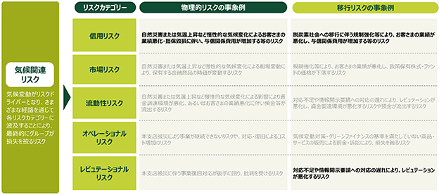
〇 気候関連リスクの評価
当社グループでは、識別した気候関連リスクについて体系的な評価を行っております。具体的には、セクター別のリスク分析と、複数の気候シナリオを用いたシナリオ分析によって、物理的リスクおよび移行リスクが当社グループに与える影響を把握しております。これらセクター別分析やシナリオ分析等の分析結果を踏まえ、セクター別のリスク管理や戦略の高度化等に反映しております。
＜セクター別分析＞
当社グループでは、信用リスクに関する分析の一環として、気候変動に伴うリスクの影響度合いを基にセクター別ヒートマップを整理しております（図表については「(3)戦略」を参照ください）。
ヒートマップ作成に際しては、気候変動影響についてリスク水準を、セクター別の想定リスク量などの定量面、地球温暖化に伴う「急性」の自然災害、「慢性」的な気温変化から想定される影響や、低炭素経済への移行に向けた「政策と法規制」、「技術」、「市場」、「評判」の変化がセクターに与えると想定される影響の規模といった定性面の双方から評価しております。また、株式会社三井住友銀行及びその主要銀行子会社におけるセクター別与信残高並びに排出量を把握しており、これらの分析結果を踏まえて、セクター別のリスク管理や戦略の高度化等に反映しております。
＜シナリオ分析＞
当社グループでは、信用リスクに関する分析の一環として、物理的リスク並びに移行リスクに伴う与信関係費用についてシナリオ分析を実施しております。シナリオ分析の方法を含む詳細については「(3)戦略」を参照ください。
なお、シナリオ分析は現時点で想定されるリスク経路とリスク量を可視化することにより、気候関連リスク管理に向けた戦略を策定するための基盤を構築することを目的としております。物理的リスクは自然災害の発生件数や経済的損失の観点、移行リスクについては特に影響を受けやすいセクターの観点から、対象を定めてシナリオ分析を実施しており、リスクや機会の識別には用いていません。
〇 気候関連リスクのモニタリング
当社グループではセクター別排出量をリスクアペタイト指標として設定し、定期的なモニタリングを行っております。指標の管理状況に課題がある場合は、投融資企画部、社会的価値創造企画部並びに事業部門で対応方針を協議の上、グループＣＦＯ、グループＣＳＯ、グループＣＲＯ、グループＣＳｕＯに報告を行っております。セクター別排出量の詳細については、「(3)戦略」並びに「(5)指標及び目標」を参照ください。
〇 気候関連機会の識別・評価・優先順位付け・モニタリング
当社グループでは、気候関連の機会を含む社会的価値創造に関する戦略（基本方針）について、グループ経営会議やサステナビリティ委員会等の議論を踏まえて策定しております。当該戦略は、全社及び事業部門の業務計画に反映しており、指標・目標として設定しているサステナブルファイナンス取組額と併せて継続的にモニタリングを実施しております。
③ 人的資本関連
〇 人的資本に関するリスクの識別・評価・モニタリング
人的資本に関するリスクの観点については「人材確保困難化」をトップリスクとして位置付けております。人的資本に関するリスクは当社グループの人事部が、リスクに関連する各施策に紐づいた指標・目標に基づいて、その進捗と短期間における急激な変化を随時継続してモニタリングしており、必要に応じて対策を行っております。なお、リスク識別に際してシナリオ分析は用いていません。
④ コンプライアンス関連
〇 コンプライアンスに関するリスクの識別・評価・モニタリング
コンプライアンスに関するリスクの観点については「顧客保護や市場の健全性を損ねるミスコンダクト」「ＡＭＬ／ＣＦＴ態勢整備不備」をトップリスクとして位置付けております。なお、リスクの識別に際してシナリオ分析は用いていません。
当社グループに内在するコンプライアンスに関するリスクおよび態勢整備状況については、当社のグループ会社を対象に、年次で評価を実施しております。評価の結果、高リスクと判定された分野に対しては、翌年度のコンプライアンス・プログラムにおいて、態勢の高度化に向けた取組を推進しております。
加えて、重要なコンプライアンス事項に関しては、指標及び閾値を設定し、月次及び四半期単位でモニタリングを行うことで、潜在的なリスクの兆候を早期に把握し、リスクの低減に努めております。これらの取組については、コンプライアンス委員会に加え、経営陣及び取締役会に対して定期的に報告を行い、ガバナンスの強化を図っております。
⑤ サイバーセキュリティ関連
〇 サイバーセキュリティに関するリスクの識別・評価・モニタリング
サイバーセキュリティに関するリスクの観点については「サイバー空間における脅威の増大」をトップリスクの一つとして位置付けております。
また、「サイバーセキュリティ経営宣言」の下、経営主導でサイバーセキュリティに対する取組を継続的に推進しております。サイバーセキュリティリスクは、全社的なリスク管理の枠組の中で管理しており、サイバーセキュリティ専任部署であるサイバーセキュリティ統括部が中心となって、外部環境や経営戦略等を踏まえながら、サイバーセキュリティ管理に関する基本方針を策定しております。なお、リスクの識別に際してシナリオ分析は用いていません。
当社グループでは、サイバーセキュリティに関する体制評価等を通じて、サイバー脅威の特定・モニタリングを行っております。具体的には、国際的な基準に基づき、定期的に第三者によるセキュリティ対策の成熟度評価を実施しております。また、脅威インテリジェンスを積極的に活用して最新のサイバー脅威に対処しており、攻撃者の動向、脆弱性に関する情報、地政学情報等を収集・評価し、当社グループのサイバーセキュリティに関する環境に当てはめ、防御や検知等に役立てております。
加えて、脆弱性を悪用した攻撃による被害を抑止するために定期的に脆弱性診断を実施し、さらに、第三者が実際にシステムに侵入してセキュリティ対策状況を評価する、脅威ベースのペネトレーションテストを実施しております。内外環境を踏まえて、当社グループにかかわるサイバー脅威を特定し、セキュリティ対策のさらなる強化に努めております。
(5) 指標及び目標
① 気候関連：温室効果ガス排出
当社グループではスコープ１温室効果ガス排出及びスコープ２温室効果ガス排出及びスコープ３温室効果ガス排出について、「温室効果ガスプロトコルの企業算定及び報告基準（2004年）」（以下「ＧＨＧプロトコル（2004年）」という。）を参考に測定しております。
（イ）温室効果ガス排出の測定アプローチ並びに対象温室効果ガス
当社グループは、「ＧＨＧプロトコル（2004年）」を参考として温室効果ガス排出を測定するにあたり、当社グループの経営方針を導入する権限を有するグループ企業及びその子会社を対象とするため、測定アプローチとして経営支配力アプローチを用いております。
当該アプローチによるスコープ１温室効果ガス排出及びスコープ２温室効果ガス排出の組織バウンダリーは、当社およびグループ連結子会社の国内外拠点（持分法適用会社は除く）です。測定対象とする温室効果ガスはＣＯ２に限定しております。
なお、スコープ３温室効果ガス排出の組織バウンダリーは、融資業務を中心に移行リスクに伴う与信関係費用の増加やレピュテーションの低下といった重要なリスクを認識している、銀行業を営む株式会社三井住友銀行及びその主要銀行子会社を集計範囲として、温室効果ガス（ＣＯ２、ＣＨ４、Ｎ２Ｏ、ＨＦＣｓ、ＮＦ３、ＰＦＣｓ及びＳＦ６）について測定を行っております。
（ロ）温室効果ガスの測定方法
〇 スコープ１温室効果ガス排出
当社グループにおけるスコープ１温室効果ガス排出の発生要因は、主にオフィス・店舗における都市ガス等や営業車の利用に伴うガソリンの使用です。
対象期間のうち、2026年３月１日から2026年３月31日に係るＣＯ２排出量の測定には一部の対象拠点において2025年３月１日から2025年３月31日に係るＣＯ２排出量を用いて合理的な方法で推計しております。したがって当社グループにおけるスコープ１温室効果ガス排出は昨年度実績に基づく見積りを含むため、測定の不確実性を含む情報です。
当社グループ国内拠点は、「ＧＨＧプロトコル（2004年）」を参考として、当連結会計年度における都市ガス、液化石油ガス、重油、軽油、ガソリン（自動車）の使用量に、当連結会計年度末において入手可能な環境省の「算定・報告・公表制度における算定方法・排出係数一覧」における排出係数を乗じる見積りの方法に基づきスコープ１温室効果ガス排出を測定しております。
さらに、当社グループ海外拠点は、「ＧＨＧプロトコル（2004年）」を参考として、当連結会計年度における都市ガス、液化石油ガス、重油、軽油、ガソリン（自動車）の使用量に、当連結会計年度末において入手可能な環境省が公表する算定・報告・公表制度における排出係数を乗じる見積りの方法に基づきスコープ１温室効果ガス排出を測定しております。なお、一部の海外拠点については、現地の状況に合わせた排出係数を使用し、測定しております。
〇 スコープ２温室効果ガス排出
当社グループにおけるスコープ２温室効果ガス排出の発生要因は、オフィス等における電力、蒸気、温水、冷水の使用です。
対象期間のうち2026年３月１日から2026年３月31日に係るＣＯ２排出量の測定には一部の対象において2025年３月１日から2025年３月31日に係るＣＯ２排出量を用いて合理的な方法で推計しております。したがって当社グループにおけるスコープ２温室効果ガス排出は昨年度実績に基づく見積りを含むため、測定の不確実性を含む情報です。
＜ロケーション基準＞
（電力）
当社グループの国内拠点は、「ＧＨＧプロトコル（2004年）」を参考として、当連結会計年度における各拠点の電力使用量に、当連結会計年度末において入手可能な環境省の「電気事業者別排出係数」における全国平均係数を乗じる見積りの方法によりスコープ２温室効果ガス排出を測定しております。
当社グループの海外拠点は、「ＧＨＧプロトコル（2004年）」を参考として、当連結会計年度における各拠点の電力使用量に、原則として当連結会計年度末時点で公表されている各国法規等の固有の排出係数を乗じ、固有の排出係数を把握できない場合は、当連結会計年度末において入手可能な国際エネルギー機関（ＩＥＡ）が公表するEmission Factorsの国別排出係数を乗じる見積りの方法によりスコープ２温室効果ガス排出を測定しております。
（蒸気、温水、冷水）
当社グループの国内拠点及び海外拠点は、「ＧＨＧプロトコル（2004年）」を参考として、当連結会計年度における各拠点の蒸気、温水、冷水使用量（活動量）に、連結会計年度末において入手可能な環境省の「熱供給事業者別排出係数」における代替値を乗じる見積りの方法によりスコープ２温室効果ガス排出を測定しております。
＜マーケット基準＞
（電力）
当社グループの国内拠点は、「ＧＨＧプロトコル（2004年）」を参考として、当連結会計年度における各拠点の電力使用量に、当連結会計年度末において入手可能な環境省の「電気事業者別排出係数」における基礎排出係数（非化石電源調整済み）を乗じる見積りの方法によりスコープ２温室効果ガス排出を測定しております。
当社グループの海外拠点は、「ＧＨＧプロトコル（2004年）」を参考として、当連結会計年度における電力使用量に、原則として当連結会計年度末時点で連携されている各電力会社との契約における排出係数を乗じ、各電力会社との契約における排出係数が把握できない場合は、ＩＥＡが公表するEmission Factorsの国別排出係数等を乗じる見積りの方法によりスコープ２温室効果ガス排出を測定しております。
なお、当社グループでは国内の非化石証書、ブラジルやチリなど南米各国のＩ－ＲＥＣ、アメリカやカナダにおけるＮＡＲ Green-e Renewable Energy StandardによるＲＥＣｓ等を購入しております。
（蒸気、温水、冷水）
ロケーション基準と同様の方法で測定しております。
〇 スコープ３温室効果ガス排出
当社グループは、スコープ３温室効果ガス排出について、「温室効果ガスプロトコルのコーポレート・バリュー・チェーン（スコープ３）基準（2011年）」に定めるスコープ３温室効果ガス排出カテゴリーのうち、カテゴリー15（ファイナンスド・エミッション）について、投融資先排出量の測定基準である「ＰＣＡＦスタンダード」が定める見積りの方法を参考として測定しております。
＜対象アセット/セクター＞
当社グループは、融資業務を中心に移行リスクに伴う与信関係費用の増加やレピュテーションの低下といった重要なリスクを認識しているため、集計対象アセットを「融資」、「プロジェクト・ファイナンス」、「未実行のローン・コミットメント」としております。なお、「融資」並びに「未実行のローン・コミットメント」は法人向けローンを対象にファイナンスド・エミッションを計測しており、個人向けローン等については含まれておりません。
また、ＴＣＦＤ提言において気候関連の財務への影響の可能性が高いとされているセクター（金融以外）を計測対象としております。
＜ファイナンスド・エミッションの測定方法（見積り方法）と使用データ＞
当社グループでは、セクター間の比較を行うため、セクター横断の統一的な手法でファイナンスド・エミッションの測定（見積り）を実施しております。なお、融資先企業が開示する排出量データを用いた測定については、各社の温室効果ガス排出量開示における算定範囲やスコープ３温室効果ガス排出カテゴリーにバラつきがあること、後述するＰＣＡＦデータベースの排出係数にはスコープ３温室効果ガス排出下流が含まれておらず比較が困難になることから、当該測定方法は用いていません。
当社グループにおける具体的な測定方法としては、以下に示す(a)の方法による見積りを優先しており、データ等の不足がある場合は(b)の方法により、ファイナンスド・エミッションの見積りを行っております。なお、以下の計算式における「融資（貸出金額）」、「未実行のローン・コミットメントの金額」、「各顧客の売上高」、「各顧客・プロジェクトのTotal Equity + Debt」については1次データを使用しております。
(a) ＰＣＡＦデータベースから引用した収益額あたりの排出係数を用いた推計
ファイナンスド・エミッション = Σ 帰属係数 × 融資先企業の排出量
帰属係数 = 各顧客に対する「融資（貸出金額）」または「未実行のローン・コミットメントの金額」 ÷ 各顧客・プロジェクトのTotal Equity + Debt
融資先企業の排出量 = 融資先企業の売上高 × ＰＣＡＦから引用した収益額あたりの排出係数
(b) ＰＣＡＦデータベースから引用した資産額あたりの排出係数を用いた推計
ファイナンスド・エミッション ＝ Σ各顧客に対する「融資（貸出金額）」または「未実行のローン・コミットメントの金額」 × ＰＣＡＦから引用した資産額あたりの排出係数
＜為替レート＞
ファイナンスド・エミッションの測定にあたり、内部管理ベースの為替レートを使用して帰属係数を算出しておりますが、帰属係数はその性質上、分子となる残高が分母となる負債＋純資産に占める割合を計算するものであり、為替レートの影響は一定相殺されるため、差異は重要ではないと考えられます。
＜測定の不確実性＞
ファイナンスド・エミッションの測定は以下の観点から、測定の不確実性の程度が高い情報と判断しております。
ＰＣＡＦスタンダードの改定、計測上の実務面を踏まえた定義変更（各種定義・計測範囲・時点等）や高度化等に伴い、将来的に算定手法が変更される可能性があり、算定結果が大きく変化する可能性があります。また、ＰＣＡＦデータベースにはスコープ３温室効果ガス排出下流の温室効果ガス排出量を推計するためのデータが含まれていないことを課題として認識しております。
なお、推計値を算出する際に使用する係数は、ＰＣＡＦデータベースの収益額・資産額あたりの排出係数を使用しております。これらの係数は今後精緻化等の過程で変更になる可能性があり、算定結果が大きく変化する可能性があります。
〇 温室効果ガス排出の算定期間
当社グループは、当連結会計年度を算定期間として温室効果ガス排出を測定しております。スコープ１温室効果ガス排出及びスコープ２温室効果ガス排出に関し、決算日が12月末日の拠点については、会計年度に合わせ2025年１月１日から2025年12月31日までを算定期間としているものの、一部の拠点については、同一建物や同一フロア内に活動拠点があり、かつ活動規模が小さいことから当連結会計年度を算定期間として温室効果ガス排出を測定しております。なお、スコープ３温室効果ガス排出カテゴリー15の測定に用いる当社グループの「融資」、「プロジェクト・ファイナンス」、「未実行のローン・コミットメント」については、2026年３月末時点の残高を用いております。
また、当社グループはファイナンスド・エミッションの測定に際して、バリュー・チェーン上の企業（融資先企業）から、財務情報（売上高、Total Equity + Debt）を取得しております。各融資先企業について取得できている最新の財務指標に基づき推計を行っておりますが、一部の情報については、当社グループの連結会計年度とは異なる期間となっております。各国における経済状況の変化に伴い、融資先企業における活動量の変化があるため、データが更新され報告期間が揃った場合には、排出量が増加（又は減少）する可能性がございます。また帰属係数についても、その性質上、分子となる残高と分母となるTotal Equity + Debtは異なる時点を用いております。
（ハ）温室効果ガス排出量の実績並びに目標
当社グループは、脱炭素に向けた取組を加速するため、自身が排出する温室効果ガス排出量および投融資ポートフォリオ全体での温室効果ガス排出量をそれぞれ2030年・2050年までにネット・ゼロとすることを目指しております。
当社グループ自身が排出する温室効果ガス排出量については、パリ協定を踏まえた我が国の気候変動への取組を踏まえ、当社グループ全体のＣＯ２に関するスコープ１温室効果ガス排出及びスコープ２温室効果ガス排出（マーケット基準）を対象とし、2030年度までに純量（ネット）ベースでゼロとする絶対量目標を設定しております。排出量の測定対象や方法については、（イ）温室効果ガス排出の測定アプローチ並びに対象温室効果ガス、並びに（ロ）温室効果ガスの測定方法を参照ください。
当社グループは、目標に対する進捗を把握するため、当社グループの経営会議並びに取締役会において、定期的に当該実績値のモニタリングを行っております。目標の変更要否についての検討もモニタリングと同時に行っております。当該目標についてはセクター別脱炭素アプローチの使用や第三者認証の取得は行っておりません。
なお、当社グループは、この純量ベースの温室効果ガス排出目標を達成するため、今後カーボン・クレジットを使用することを計画しております。具体的には、2030年度のスコープ１温室効果ガス排出及びスコープ２温室効果ガス排出目標達成に向けたカーボン・クレジットの活用方針（種類や品質などの定義）を2026年度から2028年度までの中期経営計画期間において定めることを計画しており、活用方針を作成した後に実際のカーボン・クレジット調達を進める予定です。従って、現時点ではカーボン・クレジットの調達を行っていないため、純量ベースの排出量については総量ベースの排出量と同様の実績値となっております。また、グロス目標の設定についても同様に2026年度から2028年度までの中期経営計画期間において検討を行う予定です。
投融資ポートフォリオの排出量削減に向けては、投融資先であるお客さまの脱炭素化を支援していくことが重要であり、また金融機関のポートフォリオは多岐にわたるため、多くの業種（セクター）のお客さまと状況に合わせたエンゲージメントを行う必要があります。各セクターには脱炭素化に向けたセクター固有の課題があり、脱炭素化の道筋やその削減のスピードが異なるため、セクター横断の一律的な目標を設定するのではなく、セクター別に異なる対応が必要となります。
従って、当社グループでは投融資ポートフォリオの排出量削減に向け、統一的な手法によりスコープ３温室効果ガス排出カテゴリー15（ファイナンスド・エミッション）排出量の概観を把握した上で、セクター別リスク分析結果や算定基準の状況等も考慮しながら、重点的に取り組むセクターを選別して中期目標を設定しております。中期目標の詳細については、「②気候関連：その他の指標及び目標」を参照ください。なお、当該中期目標についても、スコープ１温室効果ガス排出及びスコープ２温室効果ガス排出にかかるカーボン・クレジットの活用方針を定めた後に、同様の活用方針を定めていくことを予定しております。
＜温室効果ガス排出量の実績並びに目標＞
(*)融資並びにプロジェクト・ファイナンスの排出量合計値が対象、未実行のローン・コミットメントに関する排出量は後述の「（ニ）ファイナンスド・エミッションに関する追加的な情報」を参照ください
（ニ）ファイナンスド・エミッションに関する追加的な情報
当社グループは、ファイナンスド・エミッションについて、概観の把握に向けＰＣＡＦスタンダードに基づく算定を実施しております。ＰＣＡＦデータベースの排出係数に基づく推計値であり、実際の温室効果ガス排出量と乖離が生じる可能性を認識しております。算定手法の詳細については、前述の「（ロ）温室効果ガスの測定方法」を参照ください。
当社グループにおける当連結会計年度のファイナンスド・エミッション並びにグロス・エクスポージャーは以下の通りです。アセットクラス別、産業別のファイナンスド・エミッション並びにグロス・エクスポージャーは後述の各表を参照ください。
＜ファイナンスド・エミッション並びにグロス・エクスポージャーの実績＞
(*)ここでのグロス・エクスポージャーは貸借対照表の「貸出金」並びに注記事項にある「融資未実行残高」の合計を指します。なお、当社グループのグロス・エクスポージャーの内、主に以下３点についてはファイナンスド・エミッションの算定から除外しております。
(1)アセットクラス：算定対象は移行リスクと関連のある法人向け融資に限定しており、個人向けの融資（住宅ローン等）は除外しております。
(2)対象セクター：移行リスクと関連のあるセクターを算定対象としており、その他セクター（ＩＴなど）の法人向け融資は除外しております。
(3)対象エンティティ：株式会社三井住友銀行及びその主要銀行子会社のグロス・エクスポージャーを対象としており、その他連結子会社のグロス・エクスポージャーは除外しております。
＜融資に関する実績＞
＜プロジェクト・ファイナンスに関する実績＞
＜未実行のローン・コミットメントに関する実績＞
② 気候関連：その他の指標及び目標
当社グループは、脱炭素に向けた取組の加速並びに、投融資ポートフォリオ全体での温室効果ガス排出量ネット・ゼロ達成に向け、セクター別排出削減目標を策定しております。また、電力並びに石炭セクターにかかる排出削減の取組の一環として、石炭火力発電ならびに一般炭採掘に対する残高ゼロ目標を設定しております。
また、当社グループでは気候関連の機会に関する指標・目標として、サステナブルファイナンス実行額並びにグリーンファイナンス実行額を用いております。これら指標はグリーン・ソーシャルプロジェクトやトランジションに資する案件を対象としたローンや債券等の組成額（2020年度からの累積額）を指しており、この金額が増加することは気候関連の機会に関する収益の増加が期待されることを意味しており、また脱炭素化やトランジションに向けたお客さまの社会課題解決に向けた取組を支援することにも繋がります。
各指標・目標の詳細は以下の通りです。なお、各目標の管理状況については、「(3)戦略 ①気候関連」をご参照ください。
上記の他、物理・移行リスクに関する指標として「セクター別与信残高（ホ）」を計測しており、集計方法についても後述しております。なお、当該指標の集計結果については、「(3) 戦略 ①気候関連」を参照ください。また、内部炭素価格についても後述しております
（イ）セクター別排出量
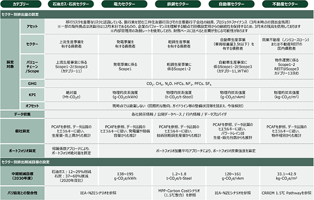
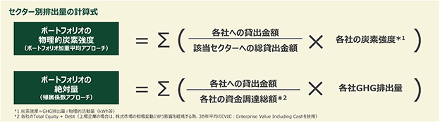
当該指標は当社グループが独自に作成した融資ポートフォリオに関するセクター別の温室効果ガス排出量を表す指標であり、第三者による認証を受けていません。パリ協定を踏まえたＩＥＡ並びに各業界団体の削減シナリオを参照して目標を設定しております。当該指標の算定方法並びに算定に用いたインプット、目標設定の考え方は以下の通りです。なお、セクター別排出量は以下の様な仮定や見積りを含むため、測定の不確実性が高い情報と認識しております。
〇 収集データ（債務者に関する排出量や活動量データ）の品質
与信業務やモニタリング等を通じて株式会社三井住友銀行が把握している各種情報に加え、データプロバイダーから提供される情報や、各債務者における開示情報（統合報告書等）、公的情報（電力調査統計等）の調査等を踏まえ、排出量データや推計に用いる活動量データ（発電量）等を収集しております。
収集データの正確性に問題があると想定される場合（前年比で大幅な変化がある、業界平均との大幅な乖離が認められる等）は、データの修正や下位のデータ品質スコアを使用するケースが存在します。またデータ不足により適切な算定や推定ができない債務者については、当該債務者の親会社にかかるデータを用いて推計を行っております。これらの対応を行った上でも、算定に必要なデータが不足している債務者については算定不可として除外し、実績に計上しておりません。
また、各セクターにおいて一部のバリュー・チェーン/カテゴリーの排出量を算定対象としておりますが、算定対象に限定した排出量データの収集ができない場合は、限定されていない排出量データ（例：スコープ３温室効果ガス排出カテゴリー11では無くスコープ３温室効果ガス排出全体のデータ）を用いることがあります。さらに、すべての温室効果ガスを算定対象としておりますが、すべての温室効果ガスを含む排出量データの収集ができない場合は、ＣＯ２など主要な温室効果ガスに絞ったデータや推計値を用いることがあります。
これらに伴い、セクター別排出量が過小・過大となる不確実性が存在しますが、各債務者における情報開示並びに品質の改善が進むことで、不確実性が縮小していくことが期待されます。
〇 収集データの最新性
各債務者の排出量・活動量データについては取得できる最新のデータに基づき算定・推計を行っております。従って、当社グループの排出量報告期間と投融資先企業におけるデータ報告期間については、差分が生じております。各国における経済状況の変化に伴い、融資先企業における排出量や活動量の変化があるため、データが更新され報告期間が揃った場合には、排出量が増加（又は減少）する可能性がございます。また、帰属係数についても、当社グループが取得することができた、投融資先企業の最新のＥＶＩＣ・負債＋純資産を用いておりますが、その性質上、分子となる残高と分母となるＥＶＩＣまたはTotal Equity＋debtは異なる時点を用いております。
（ロ）石炭火力発電向けプロジェクト・ファイナンス、及び設備紐付きコーポレート・ファイナンス貸出金残高
当該指標は当社グループが作成した、石炭火力向けプロジェクト・ファイナンス、及び石炭火力向け設備紐付きコーポレート・ファイナンスに関する貸出金と未実行のローン・コミットメントの合計を表すための指標であり、第三者による認証は取得しておりません。主な算定方法は以下の通りです。
〇 対象バウンダリー
当社グループは、融資業務を中心に移行リスクに伴う与信関係費用の増加やレピュテーションの低下といった重要なリスクを認識している、銀行業を営む株式会社三井住友銀行及びその主要銀行子会社を集計範囲としております。
〇 対象アセット
貸出金および未実行のローン・コミットメントを対象としております。なお、脱炭素社会への移行に向けた取組に資する案件を除きます。
〇 集計期間
算定にあたり、当社グループは、2026年３月末の残高を使用しております。
（ハ）一般炭採掘向け貸出金残高（ＯＥＣＤ諸国、及び非ＯＥＣＤ諸国）
当該指標は当社グループが作成した、所在地がＯＥＣＤ諸国又は非ＯＥＣＤである一般炭向け採掘を主たる事業とする事業者向け貸出金と未実行のローン・コミットメントの合計を表すための指標であり、第三者による認証は取得しておりません。主な算定方法は以下の通りです。
〇 対象バウンダリー
当社グループは、融資業務を中心に移行リスクに伴う与信関係費用の増加やレピュテーションの低下といった重要なリスクを認識している、銀行業を営む株式会社三井住友銀行及びその主要銀行子会社を集計範囲としております。
〇 対象アセット
貸出金および未実行のローン・コミットメントを対象としております。なお、化石燃料事業からの転換に資する案件を除きます。
〇 集計期間
算定にあたり、当社グループは、2026年３月末の残高を使用しております。
（ニ）サステナブルファイナンス実行額
当該指標は当社グループが独自に作成したサステナブルファイナンスの定義に該当するファイナンス金額を表すための指標であり、グリーンファイナンスを含むサステナブルファイナンスの2020年度からの累積取組額を示しております。なお、指標・目標に関する第三者認証は取得しておりません。
〇 対象バウンダリー（エンティティ）
株式会社三井住友銀行及びその主要子会社、ＳＭＢＣ日興証券株式会社及びその主要子会社を集計範囲としております。
〇 対象ファイナンス
株式会社三井住友銀行におけるローン並びにＳＭＢＣ日興証券株式会社における株式・債券の組成額の内、以下の図表に記載されている定義を満たした案件を対象としております。
＜サステナブルファイナンスの定義並びに対象ファイナンス＞
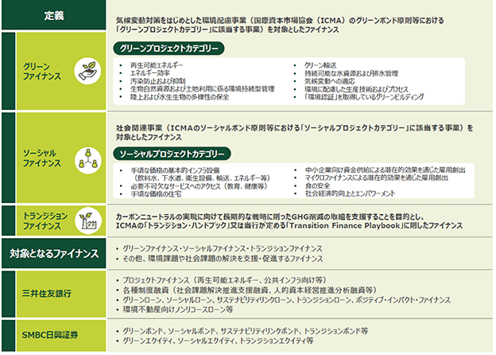
〇 為替レート
サステナブルファイナンス実行額は経営管理（事業部門の目標管理や役員等の報酬の評価等）で用いる指標であり、目標との対比を行う観点から為替変動の影響を除くため、期初に定めた為替レートを用いて円換算額を算定しております（連結決算日の為替相場による円換算額ではありません）。
〇 集計期間
サステナブルファイナンス実行額は経営管理（事業部門の目標管理や役員等の報酬の評価等）で用いる指標であり、月次で進捗モニタリングを行っているため、すべての子会社について同一の算定期間で集計しております。そのため、決算日が12月末日である株式会社三井住友銀行並びにＳＭＢＣ日興証券株式会社の一部子会社につきましても、2025年４月１日から2026年３月31日の期間で集計を行っております。
（ホ）セクター別与信残高
当社グループにおける特定のセクターに対する与信は、脱炭素社会への移行に伴いお客さまの業績が低下し、資産が座礁する可能性や、地球温暖化による災害や気温上昇に伴いお客さまの業績が低下し、資産が座礁する可能性を認識しており、関連する指標として「セクター別与信残高」を集計しております。当該指標の集計結果については、「(3) 戦略 ①気候関連」を参照ください。
当該指標は、地球温暖化による災害や気温上昇に伴い、取引先の業績が悪化するリスクや、脱炭素化に向けた事業環境の変化に伴い取引先の業績が悪化するリスクに対する当社グループの与信残高を測定するものであり、地球温暖化、又は脱炭素化に伴い失われる/座礁するリスクのある資産の残高を示す当社グループが作成した絶対指標です。当該指標は第三者による認証は取得しておりません。主な集計方法は以下の通りです。
〇 対象バウンダリー（エンティティ）
当社グループは、融資業務を中心に移行リスクに伴う与信関係費用の増加やレピュテーションの低下といった重要なリスクを認識している、銀行業を営む株式会社三井住友銀行及びその主要銀行子会社を集計範囲としております。
〇 対象アセット
当社グループは、集計対象アセットを「貸出金」「支払承諾」「外国為替」「私募債」「未実行のローン・コミットメント」「デリバティブ」等としております。
〇 集計期間
算定にあたり、2026年３月末の与信残高を使用しております。一部の海外拠点につきましては、決算日は12月末日であるものの、計測開始時からの継続性を保持するため、同様に2026年３月末の残高を使用しております。
（ヘ）内部炭素価格
当社グループでは炭素価格をシナリオ分析には用いておりますが、意思決定に用いておりません。
③ 人的資本関連
当社グループでは、人的資本に関する取組について、目標達成に向けた進捗を管理するため様々な指標・目標を用いています。
中期経営計画における人材戦略のＫＧＩとして「人的資本ＲＯＩ」と「人財ポリシースコア」、３つの重点人事戦略についてはそれぞれ「人材：重点領域人材充足率」、「カルチャー：エンゲージメントスコア」、「仕組み：労働生産性・労働分配率」をモニタリング指標として設定しております。2026年度から2028年度までの中期経営計画におけるＫＧＩおよびモニタリング指標の進捗については、2027年3月期以降適宜開示する予定です。
なお、以下でお示ししている人的資本に関する指標については、2023年度から2025年度までの人材戦略における重要指標として計画・目標を開示していた指標の３か年の結果をご報告しております。
（イ）注力分野への人材拡充に関する指標
2023年度からの３か年においては、「Ｏｌｉｖｅ」の推進を担うＤＸ人材や、法務・コンプライアンス等の経営基盤を担う人材、グローバル人材の３つの注力分野を定め、３か年投入計画を掲げていました。３か年計画は３つの注力分野すべてで達成しております。
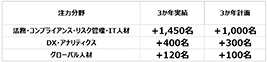
（ロ）エンゲージメントに関する指標
多様な価値観を持つ従業員が、チームワークにより成果を生み出す風土の実現を目指しており、その状況を測るためにエンゲージメントサーベイを実施しております。スコア70以上を維持することを目安とし、各種取組を通じた結果をモニタリングしております。
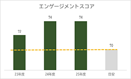
④ コンプライアンス・サイバーセキュリティ関連
当社グループでは、コンプライアンス・サイバーセキュリティに関するリスク管理を重要な経営課題と認識しており、現在、定量的な指標の特定およびデータ収集体制の整備を進めております。
このため、当連結会計年度における指標の開示は見送っておりますが、現在、データ収集等の準備を進めており、2027年３月期以降の有価証券報告書での開示に向けて対応を進めてまいります。
当社及び当社グループの事業その他に関するリスクについて、投資者の判断に重要な影響を及ぼす可能性があると考えられる主な事項や、その他リスク要因に該当しない事項であっても、投資者の投資判断上、重要であると考えられる事項について、(1)経営環境等に関するリスク、(2)当社グループの業務に内包されるリスクにおいて記載しております。また、これらのリスクは互いに独立するものではなく、ある事象の発生により他の様々なリスクが増大する可能性があることについてもご留意ください。
なお、当社は、(3)リスク管理の全体像に記載の管理体制の下、これらリスクの発生可能性を認識したうえで、発生を回避するための施策を講じるとともに、発生した場合には迅速かつ適切な対応に努める所存であります。
本項においては、将来に関する事項が含まれておりますが、当該事項は有価証券報告書提出日現在において判断したものであります。
(1) 経営環境等に関するリスク
当社グループを取り巻く経営環境が大きく変動した場合、当社グループの経営成績及び財政状態に影響を及ぼす可能性があります。具体的には以下のとおりであります。
① 近時の国内外の経済金融環境
当社グループは、国際金融市場の変動や国内外の景気の下振れ、資源価格の急激な変動等の国内外の経済金融環境の変動に対して、リスク管理体制の整備・高度化も含めた様々な対応策を講じております。しかしながら、中東情勢の深刻化や長期化といった地政学リスクの顕在化等、当社グループの想定を上回る経済金融環境の変化が生じた場合には、「(2) 当社グループの業務に内包されるリスク」に記載の信用リスク、市場リスク及び流動性リスク等が顕在化し、当社グループの経営成績及び財政状態に影響を及ぼす可能性があります。
② 災害等の発生、各種感染症の流行に関するリスク
当社グループは、国内外の店舗、事務所、電算センター等の施設において業務を行っておりますが、これらの施設が、地震等の自然災害、停電、テロ等による被害を受けた場合、または各種感染症の流行により多数の従業員が罹患した場合には、業務継続が困難となる可能性があります。
当社グループは、不測の事態に備えたコンティンジェンシープランを策定しておりますが、これらの施設への被害や従業員の罹患状況によっては、業務が停止し、当社グループの業務運営や経営成績及び財政状態に影響を及ぼす、または戦略遂行に支障が生じる可能性があります。
加えて、大規模な災害等の発生や感染症の流行等により、金融市場の混乱や国内外の経済が悪化した場合、当社グループが保有する金融商品において減損又は評価損の発生や、お客さまの業況悪化等による与信関連費用及び不良債権残高増加等、当社グループの経営成績及び財政状態に影響を及ぼす可能性があります。
③ 他の金融機関等との競争
当社グループは、国内外の銀行、証券会社、政府系金融機関、ノンバンク等との間で熾烈な競争関係にあります。また、今後も国内外の金融業界において金融機関同士の統合や再編、業務提携が行われる可能性や、フィンテック等の新技術の台頭により競争環境に変化が生じる可能性、他業種から金融業への進出が加速する可能性があることに加え、金融機関に対する規制や監督の枠組みがグローバルに変更されること等により競争環境に変化が生じる可能性があります。当社では、こうした競争環境の変化も踏まえ、2028年度までの３年間を計画期間とする中期経営計画を策定の上、様々な戦略や施策を実行してまいりますが、当社グループが競争優位を確立できない場合には、当社グループの経営成績及び財政状態に影響を及ぼす可能性があります。
④ 各種の規制及び法制度等の変更
当社グループが国内外において業務を行う際には、様々な法律、規則、政策、実務慣行、会計制度及び税制等の適用を受けております。当社グループではこれらの規制・法制度の動向を随時モニタリングし、適切な対応を行っておりますが、これらが変更された場合や新たな規制等が導入された場合に、当社グループの業務運営、経営成績及び財政状態に影響を及ぼす可能性があります。
イ．自己資本比率規制
当社グループ及び銀行子会社には、バーゼル銀行監督委員会が公表したバーゼルⅢに基づく自己資本比率規制（Ｇ－ＳＩＢｓに選定された当社グループに対しての資本積増し（Ｇ－ＳＩＢｓバッファー）に関する規制を含む）及びレバレッジ比率規制が適用されております。
当社グループ及び当社の連結子会社である株式会社三井住友銀行は海外営業拠点を有しておりますので、自己資本比率及びレバレッジ比率を金融庁告示に定められる国際統一基準以上に維持する必要があります。
加えて、当社の連結子会社のうち海外営業拠点を有していない株式会社ＳＭＢＣ信託銀行は、金融庁告示に定められる国内基準以上に自己資本比率を維持する必要があります。また、証券業を営むＳＭＢＣ日興証券株式会社は、自己資本規制比率を、金融商品取引法等に定められている基準以上に維持する必要があります。
当社グループでは、2028年度までの３年間を計画期間とする中期経営計画の中で、バーゼルⅢの見直しに係る最終規則文書に則った普通株式等Tier1比率（※）で10.5％程度を確保することを財務目標の一つとして掲げております。また当社の国内銀行子会社（株式会社三井住友銀行、株式会社ＳＭＢＣ信託銀行）及びＳＭＢＣ日興証券株式会社においても、十分な資本水準の維持に努めております。
しかしながら、当社グループ、当社の国内銀行子会社（株式会社三井住友銀行、株式会社ＳＭＢＣ信託銀行）又はＳＭＢＣ日興証券株式会社の自己資本比率等が上記の基準を下回った場合、金融庁から、自己資本の充実に向けた様々な実行命令を自己資本比率に応じて受けるほか、業務の縮小や新規取扱いの禁止等を含む様々な命令を受けることになります。また、海外銀行子会社については、現地において自己資本比率規制等が適用されており、現地当局から様々な規制及び命令を受けることになります。その場合、業務が制限されること等により、取引先に対して十分なサービスを提供することが困難となり、その結果、当社グループの経営成績及び財政状態に影響を及ぼす可能性があります。
（※） その他有価証券評価差額金を除く
ロ．ＴＬＡＣ規制
2015年11月、金融安定理事会（ＦＳＢ）はＧ－ＳＩＢｓに対して適用される新たな規制である総損失吸収力（ＴＬＡＣ）規制の枠組みを公表いたしました。2019年３月より、本邦における当該規制の適用が開始され、当社グループは、一定比率以上の総損失吸収力（ＴＬＡＣ）を維持することが求められております。
具体的には、当社グループを含むＧ－ＳＩＢｓに対して一定比率以上の損失吸収力等を有すると認められる資本・負債(以下、「外部ＴＬＡＣ」という)を確保すること、また、確保した外部ＴＬＡＣはグループ内の主要な子会社に一定額以上を配賦すること(以下、「内部ＴＬＡＣ」という)となっております。
当社グループ内では、株式会社三井住友銀行、ＳＭＢＣ日興証券株式会社が主要な子会社として指定されています。
当社グループは、外部ＴＬＡＣ比率又は本邦における主要な子会社に係る内部ＴＬＡＣ額が要求される水準を下回った場合、金融庁から外部ＴＬＡＣ比率の向上や内部ＴＬＡＣ額の増加に係る改善策の報告を求められる可能性に加えて、業務改善命令を受ける可能性があります。当社グループは、要求されるＴＬＡＣの確保のため、適格な調達手段の発行を進めておりますが、ＴＬＡＣとして適格な調達手段の発行及び借り換えができない場合には、外部ＴＬＡＣ比率及び内部ＴＬＡＣ額として要求される水準を満たせない可能性があります。
(2) 当社グループの業務に内包されるリスク
当社グループは、銀行業務を中心に、リース業務、証券業務、コンシューマーファイナンス業務等の各種金融サービスを行うグループ会社群によって構成されており、これらの会社で相互に協働して営業活動を行っておりますが、業務遂行にあたり以下のようなリスクを認識しております。
① 信用リスク
信用リスクとは、与信先の財務状況の悪化等のクレジットイベント（信用事由）に起因して、資産（オフバランス資産を含む）の価値が減少又は滅失し、損失を被るリスクであります。当社グループでは、「第５ 経理の状況 １ 連結財務諸表等 注記事項 (金融商品関係) １ 金融商品の状況に関する事項 (3) 金融商品に係るリスク管理体制 ① 信用リスクの管理」に記載のとおり、適切なリスク管理体制を構築しておりますが、取引先の業況の悪化やカントリーリスクの高まり等に伴い、幅広い業種で貸倒引当金及び貸倒償却等の与信関係費用や不良債権残高が増加し、当社グループの経営成績及び財政状態に影響を及ぼす可能性があります。
イ．取引先の業況の悪化
当社グループの取引先の中には、当該企業の属する業界が抱える固有の事情等の影響を受けている企業がありますが、国内外の経済金融環境及び特定業種の抱える固有の事情の変化等により、当該業種に属する企業の財政状態が悪化する可能性があります。また、当社グループは、債権の回収を極大化するために、当社グループの貸出先に対する債権者としての法的権利を必ずしも行使せずに、状況に応じて債権放棄、デット・エクイティ・スワップ又は第三者割当増資の引受、追加貸出等の金融支援を行うことがあります。これら貸出先の信用状態が悪化する、又は企業再建が奏功しない場合には、当社グループの与信関係費用や不良債権残高が増加する可能性があります。
ロ．他の金融機関における状況の変化
世界的な市場の混乱等により、国内外の金融機関の経営状態が悪化し、資金調達及び支払能力等に問題が生じた場合には、当社グループが問題の生じた金融機関への支援を要請される可能性がありますが、当該金融機関の信用状態に改善が見られない場合には、当社グループの与信関係費用や不良債権残高が増加する可能性があります。また、他の金融機関による貸出先への融資の打ち切りや回収があった場合にも、当該貸出先の経営状態の悪化により、当社グループの与信関係費用や不良債権残高が増加する可能性があり、それらの結果、当社グループの経営成績及び財政状態に影響を及ぼす可能性があります。
② 市場リスク
市場リスクとは、金利・為替・株式等の相場が変動することにより、金融商品の時価が変動し、損失を被るリスクであります。当社グループでは、「第５ 経理の状況 １ 連結財務諸表等 注記事項 (金融商品関係) １ 金融商品の状況に関する事項 (3) 金融商品に係るリスク管理体制 ② 市場リスク・流動性リスクの管理」に記載のとおり、適切なリスク管理体制を構築しておりますが、急激な相場の変動等により、保有する金融資産で多額の評価損・減損等が発生し、結果として当社グループの経営成績及び財政状態に影響を及ぼす可能性があります。
イ．金利変動リスク
当社グループは、国債等の市場性のある債券やデリバティブ等の金融商品を保有しております。これらは金利変動によりその価格が変動するため、主要国の金融政策の変更や、債券等の格付の低下、世界的な市場の混乱や金融経済環境の悪化等により金利が変動した場合、多額の売却損や評価損等が発生し、当社グループの経営成績及び財政状態に影響を及ぼす可能性があります。
ロ．為替変動リスク
当社グループは、保有する外貨建資産及び負債について、必要に応じて、為替リスクを回避する目的からヘッジ取引を行っておりますが、為替レートが急激に大きく変動した場合等には、多額の為替差損等が発生し、当社グループの経営成績及び財政状態に影響を及ぼす可能性があります。
ハ．株価変動リスク
当社グループは、市場性のある株式等、大量の株式を保有しております。国内外の経済情勢や株式市場の需給関係の悪化、発行体の経営状態の悪化等により株価が低下する場合には、保有株式に減損又は評価損が発生し、当社グループの経営成績及び財政状態に影響を及ぼす可能性があります。また、当社グループは、大幅な株価下落をもたらすストレス環境下においても十分に金融仲介機能を発揮できる財務基盤を確保する観点から、政策保有株式の削減計画を策定し、本計画に取り組んでおります。この株式削減に伴い、売却損失が発生する可能性があるほか、取引先が保有する当社株式が売却されることで、当社の株価に悪影響を及ぼす可能性があります。
③ 流動性リスク
流動性リスクとは、運用と調達の期間のミスマッチや予期せぬ資金の流出により、決済に必要な資金調達に支障をきたす、もしくは通常より著しく高い金利での調達を余儀なくされるリスクです。当社グループでは、「第５ 経理の状況 １ 連結財務諸表等 注記事項 (金融商品関係) １ 金融商品の状況に関する事項 (3) 金融商品に係るリスク管理体制 ② 市場リスク・流動性リスクの管理」に記載のとおり、適切なリスク管理体制を構築しておりますが、当社グループ各社の格付が低下した場合には、当社グループの国内外における資本及び資金調達の条件が悪化する、もしくは取引が制約される可能性があります。また、世界的な市場の混乱や金融経済環境の悪化等の外部要因によっても、当社グループの国内外における資本及び資金調達の条件が悪化する、もしくは取引が制約される可能性があります。このような事態が生じた場合、当社グループの資本及び資金調達費用が増加したり、資金調達等に困難が生じたりする等、当社グループの経営成績及び財政状態に影響を及ぼす可能性があります。
④ オペレーショナルリスク
オペレーショナルリスクとは、内部プロセス・人・システムが不適切であること、もしくは機能しないこと、又は外生的事象が生起することから生じる損失にかかるリスクであり、具体的には、以下のとおりであります。
イ．事務リスク
当社グループは、事務に関する社内規程等の整備、事務処理のシステム化、本部による事務指導及び事務処理状況の点検等により適正な事務の遂行に努めておりますが、役職員等が事務に関する社内規程等に定められたとおりの事務処理を怠る、あるいは事故・不正等を起こした場合には、当社グループの経営成績及び財政状態に影響を及ぼす可能性があります。
ロ．情報システム・サイバー攻撃に関するリスク
当社グループが業務上使用している情報システムにおいては、品質不良、人為的ミス、サイバー攻撃等外部からの不正アクセス、コンピューターウイルス、災害や停電、テロ等の要因によって、システムダウン、誤作動、不備、不正利用を含む障害が発生する可能性があります。
近年、ＡＩをはじめとした新技術の発展に伴い、サイバー攻撃手法の高度化・巧妙化が進んでおります。例えば、高度なＡＩモデルの進展により、システムの脆弱性を迅速に特定すること等が可能となっており、こうした技術がサイバー攻撃に悪用される可能性が高まっております。このような環境の下、金融機関のみならず取引先や業務委託先等の第三者のシステムを経由したものも含め、サイバーリスクは一層深刻化しております。
以上の認識の下、当社グループは、情報システムの安定的な稼働を維持するためのメンテナンス、バックアップシステムの確保等の障害発生の防止策を講じ、また、不測の事態に備えたコンティンジェンシープランを策定し、システムダウンや誤作動などの障害が万一発生した場合であっても安全かつ速やかに業務を継続できるよう体制の整備に万全を期しております。また、経営主導でサイバー攻撃に対するセキュリティ対策の強化をより一層推進することを定めた「サイバーセキュリティ経営宣言」を策定しており、グループ経営会議・取締役会での議論・検証の下、適切なリソースを配分するほか、サイバーセキュリティ専担組織を設置し、外部機関と連携した脅威情報の収集、24時間365日監視体制の構築、サイバー攻撃に対する多層防御やウイルス侵入も想定したセキュリティ対策の導入等、継続的なレベルアップ施策を講じてきております。
しかしながら、これらの方策を講じてもなお、最新の攻撃に対しては万全でない可能性があり、当社グループの経営成績及び財政状態に影響を及ぼす可能性があります。
ハ．お客さまに関する情報の漏洩
当社グループは、情報管理に関する規程及び体制の整備や役職員に対する教育の徹底等により、お客さまに関する情報の管理には万全を期しております。また、業務委託先である外部業者が、お客さまに関する情報を取り扱う場合には、外部業者の情報管理体制やシステムセキュリティ管理体制を検証し、情報管理が適切になされていることを確認しております。しかしながら、内部又はサイバー攻撃等外部からのコンピューターへの不正アクセスや、役職員や外部業者等の人為的ミス、事故、不正等が原因で、お客さまに関する情報が外部に漏洩した場合、お客さまからの損害賠償請求やお客さま及び市場等からの信頼失墜等により、当社グループの経営成績及び財政状態に影響を及ぼす可能性があります。
ニ．重要な訴訟等
当社グループは、国内外において、銀行業務を中心に、リース業務、証券業務、コンシューマーファイナンス業務等の各種金融サービスを行うグループ会社群によって構成されており、付加価値の高い金融サービスを幅広く提供しております。こうした業務遂行の過程で、損害賠償請求訴訟等を提起されたり、損害に対する補償が必要となる可能性があります。当社グループでは、訴訟が提起された場合等においては、弁護士の助言等に基づき、事態の調査を行い、適切な対応方針を策定の上、代理人を選任し、適切に訴訟手続を遂行しております。また、経営に重大な影響を与えると認められる訴訟等については、監査委員会、取締役会及びグループ経営会議に報告しております。しかしながら、これらの取組にも関わらず、訴訟等の結果によっては、当社グループの経営成績及び財政状態に影響を及ぼす可能性があります。
⑤ コンダクトリスク
コンダクトリスクとは、法令や社会規範に反する行為等により、顧客保護・市場の健全性・公正な競争・公共の利益及び当社グループのステークホルダーに悪影響を及ぼすリスクを指します。当社グループは、経営上の重大なリスクを特定・評価し、コントロール策によるリスクの低減・制御を図っております。また、役職員に対する研修等を通じ、健全なリスクカルチャーの浸透・醸成に努めております。しかしながら、これらの取組にも関わらず、役職員等の不適切な行為が原因で、市場及び公共の利益等に悪影響を与えた場合、お客さま及び市場等からの信用失墜等により、当社グループの経営成績及び財政状態に影響を及ぼす可能性があります。なお、当該リスクの内、法令等に違反するリスク、経済制裁対象国との取引に係るリスクについては以下のとおりであります。
イ．法令等に違反するリスク
当社グループは業務を行うにあたり、会社法、銀行法、独占禁止法、金融商品取引法、貸金業法、外為法、犯罪収益移転防止法及び金融商品取引所が定める関係規則等の各種法規制の適用を受けております。また、海外においては、それぞれの国や地域の規制・法制度の適用、及び金融当局の監督を受けております。加えて、各国当局は、マネー・ローンダリング及びテロ資金供与防止に関連し、ＦＡＴＦ等の国際機関の要請に基づいた各種施策を強化しており、当社グループは、国内外で業務を行うにあたり、これらの各国規制当局による各種規制の適用を受けております。更に、当社は、米国証券取引所上場会社として、米国サーベンス・オクスリー法や米国証券法、米国海外腐敗行為防止法等の各種法制の適用を受けております。
当社グループは、法令その他諸規則等を遵守すべく、コンプライアンス体制及び内部管理体制の強化を経営上の最重要課題のひとつとして位置付け、グループ各社の役職員等に対して適切な指示、指導及びモニタリングを行う体制を整備するとともに、不正行為の防止・発見のために予防策を講じております。しかしながら、当社グループにおいて、法令その他諸規則等を遵守できなかった場合、法的な検討が不十分であった場合又は予防策が効果を発揮せず役職員等による不正行為が行われた場合には、不測の損失が発生したり、行政処分や罰則を受けたり、業務に制限を付されたりするおそれがあり、また、お客さまからの損害賠償請求やお客さま及び市場等からの信頼失墜等により、当社グループの経営成績及び財政状態に影響を及ぼす可能性があります。
ロ．経済制裁対象国との取引に係るリスク
本邦を含む各国当局は、経済制裁対象国や特定の団体・個人等との取引を制限しております。例えば、米国関連法規制の下では、米国政府が経済制裁対象国と指定している国等と米国人（米国内の企業を含む）が事業を行うことを、一般的に禁止又は制限しております。また、米国政府は、イラン制裁関連法制等により、米国以外の法人、個人に対しても、イランの指定団体や指定金融機関との取引等を規制しております。当社グループは、本邦・米国を含む各国の法規制を遵守する体制を整備しておりますが、既に米国財務省外国資産管理室（ＯＦＡＣ）に自主開示している取引を含めて、当社グループが行った事業が法規制に抵触した場合には、関連当局より過料等の処分を受ける可能性や厳しい行政処分等を受ける可能性があります。なお、取引規模は限定的でありますが、当社の銀行子会社の米国以外の拠点において、米国法令等を含む各国関連法規の遵守を前提として、経済制裁対象国と銀行間取引を行う場合があり、経済制裁対象国との取引が存在すること等により当社グループの風評が悪化し、お客さまや投資者の獲得あるいは維持に支障を来す可能性があります。それらにより、当社グループの株価、業務、経営成績及び財政状態に影響を及ぼす可能性があります。
⑥ 決済リスク
当社グループは、国内外の多くの金融機関と多様な取引を行っております。大規模なシステム障害や災害が発生した場合、政治的な混乱等により取引相手である金融機関の決済が行われないような事態等が発生した場合、又は金融システム不安が発生した場合に、金融市場における流動性が低下する等、決済が困難になるリスクがあります。また、非金融機関の取引先との一定の決済業務においても取引先の財政状態の悪化等により決済が困難になるリスクがあります。
当社グループでは、勘定系システム等の重要なシステムについては、バックアップサーバーを東日本・西日本に分散して設置するとともに、定期的な訓練を実施する等、システム障害や災害発生時に迅速に対応できる体制の構築に努めているほか、日中の流動性について、定期的なモニタリングやストレステストの実施等、当社グループの決済が滞らないよう管理する体制を構築しております。
しかしながら、想定を上回る事態が発生した場合には、決済が困難になることで、当社グループの経営成績及び財政状態に影響を及ぼす可能性があります。
⑦ レピュテーショナルリスク
レピュテーショナルリスクとは、当社グループの事業や従業員その他関係者の行為により、お客さまや株主をはじめとするステークホルダーからの高い期待に応えられず、当社グループの企業価値の毀損や信頼低下につながるリスクを指します。
当社グループでは、レピュテーショナルリスクが顕在化するおそれがある事態に関する情報を適切に収集すると共に、このような事態に対して適切な措置を講ずることにより、リスクの制御及び削減に努めておりますが、想定外の急速な情報の拡散等により、これらの対応策が奏功せず、お客さまや株主をはじめとするステークホルダーからの信頼低下につながる可能性があります。その結果、当社グループの株価、業務、経営成績及び財政状態に影響を及ぼす可能性があります。
⑧ モデルリスク
モデルリスクとは、モデル（※）の開発若しくは実装での作業ミス、または、モデルの前提や限界を超えた利用等により、経営判断・業務判断等を誤り、損失・不利益を被るリスクを指します。当社グループでは、リスク管理や時価評価等にモデルを活用しており、モデルの開発・使用等の各プロセスに応じた適切な管理を実施することで、モデルリスクの低減を図っております。しかしながら、モデル開発時の想定を超えた金融経済環境、事業環境の変化に直面した場合、または役職員による不適切なモデル利用がなされた場合等は、モデルのアウトプットの不確実性が高まり、経営判断・業務判断を誤る可能性があります。
（※） 理論・仮定を用いて、入力データを処理し、推定値・予測値・スコア・分類等を出力する定量的手法
⑨ 環境社会リスク
環境社会リスクとは、気候関連、自然関連、人権等の、環境・社会要因がリスクドライバーとなり、様々な経路を通じて各リスクカテゴリーに波及することにより、最終的に当社グループが損失を被るリスクを指します。環境社会リスクに関する波及経路の把握、リスクの測定・モニタリング、特性に応じたリスク管理を行っておりますが、各国法制度の変更や事業環境の変化等により、必ずしも奏功するとは限らず、当社グループの企業価値の毀損や信頼低下、経営成績及び財政状態に影響を及ぼす可能性があります。
⑩ 戦略リスク
イ．当社グループのビジネス戦略に関するリスク
当社グループは、銀行業務を中心に、リース業務、証券業務、コンシューマーファイナンス業務等の各種金融サービスを行うグループ会社群によって構成されており、中長期ビジョン、「世界をつなぐ日本発のトラステッド・パートナー」のもと、2026年５月に公表した、2026年度から2028年度までの３年間を計画期間とする中期経営計画においては、このビジョンの実現に向けた様々なビジネス戦略を実施してまいります。これらのビジネス戦略は、「(3) リスク管理の全体像 ③トップリスク」に記載の、経営上特に重要なリスク事象も踏まえ策定しておりますが、想定外の金融経済環境、事業環境の変化等により、必ずしも奏功するとは限らず、当初想定した成果をもたらさない可能性があります。
ロ．当社の出資、戦略的提携等に係るリスク
当社グループはこれまで、銀行業務、リース業務、証券業務、コンシューマーファイナンス業務等における様々な戦略的提携、提携を視野に入れた出資、買収等を国内外で行ってきており、今後も同様の戦略的提携等を行っていく可能性があります。当社グループでは、これらの戦略的提携等を行うにあたっては、そのリスクや妥当性を十分に検討しておりますが、①法制度の変更、②金融経済環境の変化や競争の激化、③提携先や出資・買収先の業務遂行に支障をきたす事態が生じた場合等には、期待されるサービス提供や十分な収益を確保できない可能性があります。また、当社グループの提携先又は当社グループのいずれかが、戦略を変更し、相手方との提携により想定した成果が得られないと判断し、あるいは財務上・業務上の困難に直面すること等によって、提携関係が解消される場合には、当社グループの収益力が低下したり、提携に際して取得した株式や提携により生じたのれん等の無形固定資産、提携先に対する貸出金の価値が毀損したりする可能性があります。これらの結果、当社グループの経営成績及び財政状態に影響を及ぼす可能性があります。
ハ．戦略遂行に必要な有能な人材の確保
当社グループは幅広い分野で高い専門性を必要とする業務を行っておりますので、各分野において有能で熟練した人材が必要とされます。当社グループでは、「２ サステナビリティに関する考え方及び取組 (3) 戦略 ②戦略（人的資本）」に記載のとおり、役職員の積極的な採用及び役職員の継続的な研修等により、多様な人材の確保・育成を行っておりますが、有能な人材を継続的に採用し定着を図ることができなかった場合には、戦略・主要分野での人材確保が困難となり、策定したビジネス戦略が想定通りに実施できない可能性があります。その結果、当社グループの経営成績及び財政状態に影響を及ぼす可能性があります。
⑪ 財務報告に係る内部統制に関するリスク
当社は、金融商品取引法に基づいて、財務報告に係る内部統制の有効性を評価し、その結果を記載した内部統制報告書の提出を義務付けられております。また、当社は、米国証券取引所上場会社として、米国サーベンス・オクスリー法に基づいて、財務報告に係る内部統制等の評価も義務付けられております。
当社は、会計処理の適正性及び財務報告の信頼性を確保するため、財務報告に係る内部統制評価規程等を制定し、財務報告に係る内部統制について必要な体制を整備しております。しかしながら、財務報告に係る内部統制が有効でない場合には、当社の財務報告に対するお客さま及び投資者等からの信頼を損ない、その結果、当社の株価が悪影響を受ける可能性があります。
⑫ リスク管理方針及び手続の有効性に関するリスク
当社グループは、リスク管理方針及び手続を整備し運用しておりますが、新しい分野への急速な業務の進出や拡大に伴い、リスク管理方針及び手続が有効に機能しない可能性があります。また、当社グループのリスク管理方針及び手続の一部は、過去の経験に基づいた部分があることから、将来発生する多様なリスクを必ずしも正確に予測することができず、有効に機能しない可能性があります。その結果、当社グループの経営成績及び財政状態に影響を及ぼす可能性があります。
(3) リスク管理の全体像
① リスク管理体制
当社グループは、リスク管理の重要性を踏まえ、経営陣がリスク管理プロセスに積極的に関与し、その有効性と適切性を検証・モニタリングする体制としています。具体的には、業務戦略やリスク認識を踏まえ、グループ全体のリスク管理の基本方針およびリスクアペタイトをグループ経営会議で決定し、取締役会の承認を得た上で、これらを踏まえたリスク管理の執行状況等についてグループＣＲＯが取締役会に報告しています。リスクアペタイトの決定に際しては、経営上特に重要なリスク事象をトップリスクとして選定し、ストレステスト等によるリスク分析を実施しています。さらに期中において、当初想定していた環境やリスク認識に大きな変化が生じた場合等には、取締役会の承認を得た上で、グループ全体のリスクアペタイトの見直しを適時適切に行います。
② リスクアペタイト・フレームワーク
当社グループは、収益拡大のために取る、あるいは許容するリスクの種類と量（リスクアペタイト）を明確にし、グループ全体のリスクをコントロールする枠組みとして、「リスクアペタイト・フレームワーク」を導入しております。
リスクアペタイト・フレームワークは、業務戦略とともに経営管理の両輪を成すものとして位置付けており、グループを取り巻く環境やリスク認識を踏まえ、適切なリスクテイクを行う経営管理の枠組みです。リスクが顕在化した場合の影響も踏まえながら、信用リスクや市場リスク、流動性リスク等のリスクカテゴリーごとにリスクアペタイトを設定し、取締役会が決定しております。また、グループ全体のリスクアペタイトに基づき、事業部門別にもリスクアペタイトを設定し、適切な管理を行っています。
③ トップリスク
当社グループでは、「(1) 経営環境等に関するリスク」及び「(2) 当社グループの業務に内包されるリスク」で記載されている各リスクに関して、当社グループにとって、経営上特に重要なリスク事象を「トップリスク」として選定しております。「トップリスク」は、リスク委員会やグループ経営会議等での活発な議論を踏まえて選定しており、リスクアペタイト・フレームワークの設定や業務戦略の策定などの際に活用しております。
有価証券報告書提出日時点で、当社グループが、特に重要なリスク事象として認識している「トップリスク」は次のとおりであります。
（注） 上記は認識しているリスクの一部であり、上記以外のリスクによっても経営上、特に重大な悪影響が生ずる可能性があることにご留意ください。
④ ストレステスト
フォワードルッキングな業務戦略の策定・遂行のため、外部事象等の情報収集を通じたリスクの予兆把握に加えて、ストレステストの手法を活用して、景気や市場変動時の業務影響等をあらかじめ分析・把握するよう努めております。トップリスクや専門家等との議論を踏まえながら、強い景気後退や市場混乱等の厳しい環境を想定したシナリオを設定し、グループのリスクテイク余力を把握するとともに、ストレス下においても十分な健全性を維持できるかを検証しています。